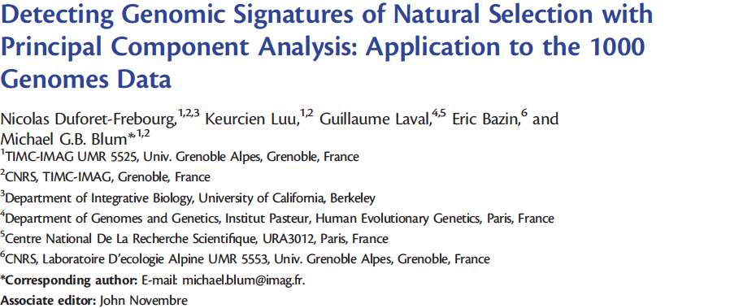
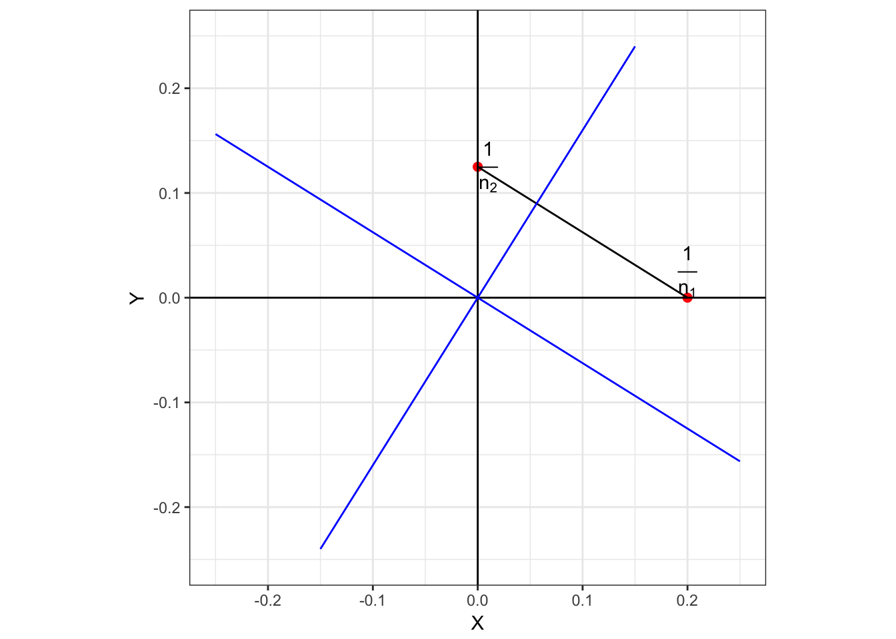
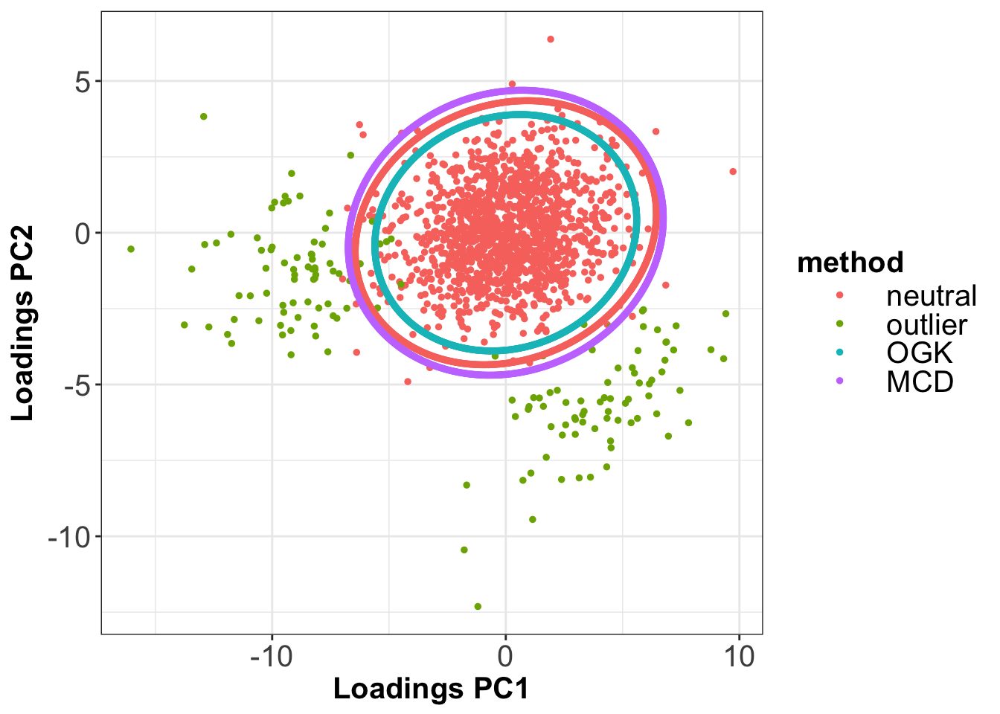

Chapter 2 Adaptation locale
Cette première partie traitera dans un premier temps des méthodes destinées à identifier des loci impliqués dans des processus d’adaptation locale. Nous présenterons différentes méthodes classiques de scan génomique pour la sélection. Ensuite, nous évoquerons l’utilisation de l’Analyse en Composantes Principales en génétique des populations. Par souci de clarté, nous ne considèrerons ici que des espèces diploïdes, bien qu’une grande partie des résultats présentés ici puisse être adaptée au cas d’espèces haploïdes. Les loci seront par ailleurs supposés bi-alléliques, c’est-à-dire que pour un locus donné, au plus deux allèles sont observés sur ce locus à l’échelle de la population étudiée.
2.1 L’état de l’art pour les scans génomiques
2.1.1 Modèles démographiques
Afin de mieux comprendre l’heuristique des méthodes de scan génomique présentées ici, nous donnons dans ce paragraphe une brève description des modèles démographiques fréquemment utilisés en génétique des populations. En effet l’idée de sélection dans une population est généralement relative à (au moins) une autre population, et l’histoire démographique de ces populations joue un rôle important sur la distribution théorique des fréquences alléliques.
2.1.1.1 Modèle en îles
Dans un modèle en îles, les différentes populations échangent entre elles des individus au cours du temps (Figure 2.1). La proportion d’individus échangée est appelée taux de migration. De forts taux de migration vont avoir tendance à homogénéiser les variations génétiques entre les populations. Des faibles taux de migration vont en revanche conduire à une différenciation plus forte. Les différences de taux de migration peuvent par exemple être expliquées par l’existence de barrières naturelles (Landguth, Cushman, Murphy, & Luikart, 2010).
2.1.1.2 Modèle star-like
Le modèle star-like suppose l’existence d’une population ancestrale de laquelle sont issues différentes populations (Figure 2.1). Contrairement au modèle en îles, les populations évoluent de façon indépendante sans s’échanger d’individus, et se différencient éventuellement sous l’effet de la dérive génétique et de mutations aléatoires. Le modèle de divergence instantanée est un modèle star-like particulier, dans lequel les populations ont divergé au même moment (Figure 2.1).
Figure 2.1: Modèles démographiques. A. Représentation schématique d’un modèle en îles à trois populations. B. Représentation schématique d’un modèle star-like à trois populations où les populations ont divergé de la population ancestrale à des instants différentes, conduisant à des branches de longueurs inégales. C. Représentation schématique d’un modèle de divergence instantanée à trois populations où les populations ont divergé au même instant, conduisant à des branches de même longueur.
2.1.2 L’indice de fixation
Indépendamment de l’histoire démographique, un allèle sélectionné voit généralement sa prévalence augmenter au sein d’une population. Si bien que l’observation d’une fréquence allélique anormalement élevée dans une population relativement aux autres donne à suggérer que cet allèle a été favorablement sélectionné. Dans l’optique de détecter des signaux de sélection, il semble alors naturel de proposer une statistique testant si au moins deux populations présentent des fréquences alléliques significativement différentes l’une de l’autre (Holsinger & Weir, 2009). L’indice de fixation, ou encore \(F_{ST}\) en abrégé, est une statistique basée sur cette heuristique. Pour un locus donné, dénotant \(N\) le nombre de populations considérées et (\(p_1, p_2, \dots, p_N\)) les fréquences d’un des deux allèles existant, la \(F_{ST}\) est définie par la relation suivante (Wright, 1943) :
\[\begin{equation} F_{ST} = \frac{\frac{1}{N-1}\sum_{i = 1}^N (p_i - \bar{p})^2}{\bar{p}(1 - \bar{p})} \tag{2.1} \end{equation}\]où \(\bar{p} = \frac{1}{N-1}\sum_{i = 1}^N p_i\). Le numérateur correspond à la variance génétique interpopulationnelle tandis que le dénominateur correspond à la variance génétique mesurée à l’échelle de la métapopulation10. La \(F_{ST}\) peut être vue comme la réduction de variance génétique due à la structure de population. Autrement dit, on regarde si le fait de grouper les individus dans des populations a une incidence ou non sur la variance génétique.
2.1.3 Test de Lewontin-Krakauer
Comme expliqué plus haut, la détection de loci sous sélection passe généralement par la caractérisation d’un modèle décrivant l’évolution de loci sous l’effet de processus neutres tels que la dérive génétique. Ce principe renvoie en statistiques à la notion de test d’hypothèse. Les tests d’hypothèse sont particulièrement intéressants lorsque l’on cherche à évaluer la probabilité qu’un évènement a de se produire. Dans le cas des scans génomiques, il s’agit d’estimer la distribution neutre de la statistique de test (calculée en chaque locus), afin d’identifier les loci qui s’en écartent le plus.
Suivant ce principe, Lewontin et Krakauer proposent pour la \(F_{ST}\) un test d’adéquation du \(\chi^2\) (Lewontin & Krakauer, 1973) :
\[\begin{equation} T_{LK} = \frac{N - 1}{\bar{F}_{ST}} F_{ST} \tag{2.2} \end{equation}\]Dans un scénario de divergence instantanée (Figure 2.1), sous l’hypothèse que les fréquences alléliques sont distribuées selon une loi normale ou binomiale, \(T_{LK}\) suit une loi du \(\chi^2\) à \(N-1\) degrés de libertés (Lewontin & Krakauer, 1973). En effet, en utilisant la définition de la \(F_{ST}\) (2.1) et en remarquant que :
\[\begin{equation} (N-1)F_{ST} = \frac{1}{\bar{p}(1 - \bar{p})}\sum_{i = 1}^N (p_i - \bar{p})^2 = \left(\frac{\boldsymbol{p} - \bar{p}}{\sqrt{\bar{p}(1-\bar{p})}}\right) \left(\frac{\boldsymbol{p} - \bar{p}}{\sqrt{\bar{p}(1-\bar{p})}}\right) ^T \tag{2.3} \end{equation}\]il est possible de réécrire \(T_{LK}\) sous la forme d’une somme quadratique de lois normales. Cependant, les contraintes sur le modèle démographique sous-jacent sont extrêmement fortes et il est raisonnable de penser que celles-ci ne seront vraisemblablement pas toujours vérifiées. Des variantes de ce test ont donc été proposées pour s’adapter à des modèles plus généraux.
2.1.3.1 Estimation du nombre de degrés de liberté effectif
Dans le cas où les populations n’évoluent pas de façon indépendante (ce qui peut être le cas s’il y a eu de l’isolement par la distance par exemple), la statistique \(T_{LK}\) n’est plus distribuée selon un \(\chi^2\) à \(N-1\) degrés de liberté. Ce test peut cependant être rendu valable en estimant le nombre de degrés de liberté effectif \(\text{df}\) de la statistique \(T_{LK}\) (Whitlock & Lotterhos, 2015). Pour estimer \(\text{df}\), Whitlock & Lotterhos (2015) dérivent un modèle de vraisemblance basé sur la distribution de la \(F_{ST}\). Partant de la densité d’une variable aléatoire suivant un \(\chi^2\) à \(\text{df}\) degrés de libertés, la densité de la \(F_{ST}\) s’écrit :
\[\begin{equation} f(F_{ST}) = \frac{\text{df}}{\bar{F}_{ST}} \times \frac{1}{2^{\frac{\text{df}}{2}}\Gamma\left(\frac{\text{df}}{2}\right)} \times \left(\frac{\text{df}}{\bar{F}_{ST}}F_{ST}\right)^{-1+\frac{\text{df}}{2}} \tag{2.4} \end{equation}\]L’estimation de \(\text{df}\) se fait en maximisant la fonction de log-vraisemblance \(\sum_{i=1}^p \log(f(F_{ST}^i))\) (où \(F_{ST}^i\) désigne la \(F_{ST}\) observée pour l’allèle \(i\)). La correction du test de Lewontin-Krakauer consiste alors à tester l’adéquation de \(\frac{\text{df}}{\bar{F}_{ST}}F_{ST}\) à un \(\chi^2\) à \(\text{df}\) degrés de liberté.
2.1.3.2 Dérivation du test de Lewontin-Krakauer dans le cas de populations structurées
Dans le cas de populations structurées, l’hypothèse de divergence instantanée ne tient plus. Pour tenir compte de la structure, Bonhomme et al. (2010) proposent de corriger la statistique \(T_{LK}\) pour l’apparentement génétique11 des populations, modélisé par une matrice \(\mathcal{F} = (f_{ij})_{1 \leq i,j \leq N} \in M_N(\mathbb{R})\), où \(f_{ij}\) mesure la corrélation entre \(p_i\) et \(p_j\) et peut être interprétée comme la probabilité qu’un individu de la population \(i\) et un individu de la population \(j\) aient hérité de cet allèle d’un même ancêtre commun.
La statistique de test \(T_{F-LK}\), correspondant au test de Lewontin-Krakauer corrigé pour l’apparentement génétique \(\mathcal{F}\), garde une forme analogue à celle développée en (2.3) :
\[\begin{equation} T_{F-LK} = \left(\frac{\boldsymbol{p} - \hat{p}_0}{\sqrt{\hat{p}_0(1-\hat{p}_0)}}\right) \mathcal{F}^{-1} \left(\frac{\boldsymbol{p} - \hat{p}_0}{\sqrt{\hat{p}_0(1-\hat{p}_0)}}\right)^T \tag{2.5} \end{equation}\]où \(\hat{p}_0\) désigne un estimateur de la fréquence \(p_0\) de l’allèle dans la population ancestrale. Dans le cas où les loci sont soumis uniquement à la dérive génétique, \(T_{F-LK} \sim \chi_{N - 1}^2\) (Bonhomme et al., 2010). En pratique, la méthode implémentée dans le logiciel hapflk cherche à estimer les paramètres \(p_0\) et \(\mathcal{F}\).
2.1.4 Le modèle \(F\)
Une autre idée consiste à affirmer qu’en l’absence de sélection, dans un modèle en îles, la proportion d’allèles immigrants12 doit être la même pour tous les loci (Beaumont & Balding, 2004). Cette proportion d’allèles immigrants mesure la dérive génétique subie par la population qui intègre ces allèles (Villemereuil & Gaggiotti, 2015). En effet, une population échangeant moins d’allèles avec les autres populations se retrouverait alors plus différenciée. D’un point de vue de la sélection allélique, ce sont les loci susceptibles d’être sous sélection sont ceux présentant une proportion d’allèles migrants anormalement basse (Bazin, Dawson, & Beaumont, 2010; Petry, 1983). Beaumont & Balding (2004) proposent alors un modèle de régression logistique pour la \(F_{ST}\) (Balding, 2003; Balding, Bishop, & Cannings, 2008), en la modélisant par des effets \(\alpha\) spécifiques au locus (taux de mutation, sélection) et des effets \(\beta\) spécifiques à la population (taille de population effective, taux de migration), c’est le modèle \(F\) :
\[\begin{equation} \log \left( \frac{F_{ST}}{1 - F_{ST}} \right) = \alpha + \beta \tag{2.6} \end{equation}\]La décomposition de la \(F_{ST}\), en une somme d’effets locus-spécifique et population-spécifique, permet d’identifier les loci à forte \(F_{ST}\) qui présentent un effet qui n’est pas partagé par les autres loci.
La liste des méthodes présentées ici n’est pas exhaustive, mais elle met en avant plusieurs inconvénients qui sont communs à la plupart des scans génomiques.
Dans le cas de la \(F_{ST}\), la nécessité de travailler avec des fréquences alléliques populationnelles impose de travailler à l’échelle des populations plutôt qu’à l’échelle des individus. Les conséquences directes d’une telle nécessité sont :
- l’assignation arbitraire de chaque individu à une population. La présence d’individus métissés peut s’avérer problématique.
- la non-considération d’éventuelles structures de population plus fine au sein de chaque population.
Les méthodes de scan génomique baséss sur des méthodes bayésiennes telles que Bayescan ou la première version de PCAdapt (Beaumont & Balding, 2004; Duforet-Frebourg, Bazin, & Blum, 2014) sont connues pour être computationnellement lourdes, et peuvent nécessiter plusieurs jours de calcul même dans le cas de jeux de données comportant seulement quelques milliers de SNPs.
2.2 L’Analyse en Composantes Principales en génétique des populations
L’Analyse en Composantes Principales est un outil incontournable pour l’analyse de données génétiques. Elle est utilisée principalement comme un outil de visualisation, aussi bien en génétique des populations que pour les études d’association. Elle est également connue pour être capable de retrouver la structure génétique, et donne la possibilité de ne garder qu’un nombre réduit de variables tout en résumant l’essentiel de la variation génétique. Nous présentons ici l’Analyse en Composantes Principales ainsi que ses applications en génétique des populations.
2.2.1 Principe de l’Analyse en Composantes Principales
L’Analyse en Composantes Principales est une méthode statistique consistant à transformer un ensemble de variables possiblement corrélées en un nouvel ensemble de variables orthogonales et donc non corrélées appelées composantes principales. Cette transformation vérifie plusieurs propriétés dont celle d’orthogonalité, c’est-à-dire que la distance euclidienne entre deux observations est préservée. De plus, elle est définie de telle sorte que la première composante principale maximise la variance, ce qui signifie que parmi toutes les droites affines de l’espace de départ, la première composante correspond à la droite affine où la projection orthogonale des observations présente la dispersion (autrement dit la variance) la plus grande. De la même manière, la deuxième composante principale correspond à la droite affine maximisant la variance, sous la contraite d’être orthogonale à la composante principale précédente. Les composantes principales suivantes se déduisent donc des précédentes en suivant ce schéma itératif. La contrainte d’orthogonalité impose que le nombre de composantes principales soit inférieur au nombre de variables et au nombre d’observations. En pratique, le calcul des composantes principales repose sur la diagonalisation de la matrice de covariance ou de la matrice de corrélation.
Figure 2.2: Exemple de données distribuées selon une Gaussienne multivariée. La droite rouge correspond à l’axe de projection maximisant la variance, et donc par définition, à la première composante principale. La droite verte correspond à la deuxième composante principale et se déduit de la première grâce à la contraite d’orthogonalité et au fait qu’il n’y a ici que deux variables.
2.2.2 Apparentement génétique interindividuel
L’utilisation de l’Analyse en Composantes Principales en génétique des populations a été popularisée par Cavalli-Sforza (P. Menozzi, Piazza, & Cavalli-Sforza, 1978). En génétique des populations, l’Analyse en Composantes Principales est réalisée à partir de la diagonalisation d’une matrice de covariance particulière, appelée matrice d’apparentement génétique (G. McVean, 2009). Nous avons vu un peu plus haut la notion d’apparentement génétique interpopulationnel ainsi que l’intérêt de corriger la \(F_{ST}\) pour celui-ci. Depuis l’apparition des données génomiques, il est possible de définir des mesures de similarité génétique à l’échelle de l’individu à partir des données de génotype, contrairement à l’apparentement génétique interpopulationnel qui est défini à partir des fréquences alléliques. La figure 2.3 compare les deux matrices d’apparentement pour une même simulation d’un modèle démographique à trois populations, et met en évidence le fait que l’apparentement génétique peut s’apprécier à une échelle plus fine. Il existe cependant différentes définitions de l’apparentement génétique interindividuel (D. Speed & Balding, 2015). Nous utiliserons la définition basée sur la corrélation allélique, retenue par Galinsky et al. (2016) et G. Chen, Lee, Zhu, Benyamin, & Robinson (2016), auquel cas l’apparentement génétique entre l’individu \(i\) et l’individu \(j\) est donnée par la quantité suivante :
\[\begin{equation} GRM_{ij} = \frac{1}{p} \sum_{k = 1}^p \frac{(G_{ki} - 2p_k) \times (G_{kj} - 2p_k)}{2p_i(1-p_i)} \tag{2.7} \end{equation}\]Il convient de préciser qu’il ne s’agit pas exactement d’une matrice de corrélation, puisque le terme \(2p_k\) ne correspond ni à la moyenne de \(G_{.,i}\), ni à celle de \(G_{.,j}\).
Figure 2.3: À gauche une matrice d’apparentement génétique interpopulationnelle. À droite une matrice d’apparentement génétique interindividuelle.
2.2.3 Applications en génétique des populations
Visualisation
En génétique des populations, l’ACP est devenu un outil de visualisation incontournable (REDITE), notamment grâce à sa capacité à rendre compte de la structure de populations à l’aide d’un faible nombre d’axes principaux, appelés aussi axes de variation génétique (Price et al., 2006).

Figure 2.4: ACP réalisée sur la phase 3 du jeu de données HapMap (Gibbs et al., 2003).
Correction pour la structure de population
En génétique associative, où l’on cherche à détecter les gènes associés à un phénotype en comparant des individus porteurs et non-porteurs du phénotype, les composantes principales servent par exemple à corriger pour la structure de population pour éviter les associations dues à l’excès de différenciation génétique entre les individus porteurs et non-porteurs (Price et al., 2006).
Structure géographique
Novembre et al. (2008) ont montré que ces axes de variation génétique pouvaient également être interprétés en terme d’axes géographiques. L’Analyse en Composantes Principales a été réalisée sur un échantillon d’individus européens issus du jeu de données POPRES (Nelson et al., 2008). En figure 2.5, nous observons en effet que la projection des individus sur les deux premiers axes de l’ACP reflète de façon particulièrement frappante la disposition géographique des différentes populations.

Figure 2.5: ACP réalisée sur le jeu de données POPRES (Novembre et al., 2008).
Ascendance
Une autre particularité de l’ACP réside dans la possibilité d’inférer les coefficients de métissage ou coefficients d’ascendance (Ma & Amos, 2012; G. McVean, 2009). Un coefficient de métissage quantifie pour un individu donné la proportion du génôme provenant d’un groupe génétique spécifique (appelé aussi population source ou population ancestrale). Nous reviendrons sur cette notion dans le chapitre consacré à l’introgression.
Malgré l’importance et la popularité de l’Analyse Composantes Principales en génétique des populations, ce n’est que récemment que son utilisation a été étendue aux scans génomiques (Duforet-Frebourg et al., 2015; Galinsky et al., 2016). Dans la partie qui suit, nous proposons de nouvelles statistiques de sélection basées sur l’Analyse en Composantes Principales et démontrons en quoi elles généralisent les tests classiques de différenciation.
2.3 Statistiques de test basées sur l’Analyse en Composantes Principales
Nous présentons dans cette partie des statistiques basées sur l’Analyse en Composantes Principales dans le cadre des scans génomiques. Les raisons pour lesquelles nous nous sommes intéressés à l’ACP sont multiples. Tout d’abord, l’ACP est particulièrement adaptée au traitement de données en grande dimension, justement parce qu’elle permet de les résumer à l’aide d’un nombre réduit de variables. De plus, comme expliqué précédemment, l’ACP permet de retrouver la structure génétique de façon non paramétrique et sans prior sur l’appartenance individuelle. Grâce à cette propriété, nous montrons la possibilité d’étendre la \(F_{ST}\) au cas de populations structurées sans information populationnelle. L’idée de notre démarche repose sur l’hypothèse que les axes principaux reflètent la structure génétique et que les marqueurs génétiques les plus corrélés à ces axes sont des candidats crédibles pour l’adaptation locale. Cette partie sera dédiée à la présentation des méthodes statistiques développées à partir de cette hypothèse de travail. Leur présentation sera accompagnée de validations numériques conduites sur des simulations ainsi que de justifications théoriques quant aux similarités qu’elles présentent avec les méthodes classiques de scan génomique.
La communalité est la première statistique conçue à partir de l’Analyse en Composantes Principales. La communalité est une notion empruntée à l’analyse factorielle et s’interprète comme la proportion de variance expliquée par le modèle à facteurs. L’article 1 sera consacré à l’utilisation de la communalité en tant que statistique de test pour la détection de signaux d’adaptation locale. Nous justifierons également d’un point de vue théorique les observations établissant la corrélation entre l’indice de fixation et la communalité. Pour ce faire, nous démontrerons dans le cas de deux populations que la \(F_{ST}\) peut être vue comme une statistique de communalité dans le cas de facteurs discrets, nous invitant de ce fait à considérer la communalité comme une extension de la \(F_{ST}\) à l’échelle individuelle. Cette généralisation est particulièrement intéressante lorsqu’il est difficile de définir des populations de façon claire comme cela peut être le cas en présence d’individus métissés. Cependant, de la même manière que la \(F_{ST}\), la communalité n’est pas adaptée au cas de populations structurées. Plusieurs approches ont été développées afin d’adapter la communalité au cas de populations structurées. L’approche statistique qui sera finalement retenue est basée sur la distance robuste de Mahalanobis, à laquelle sera consacré l’article 2. Enfin nous établirons le lien entre cette nouvelle statistique et le test de Lewontin-Krakauer corrigé pour l’apparentement génétique (2.5), ce qui permettra de conclure quant à la généralisation de la statistique de test \(T_{F-LK}\) par cette nouvelle statistique.
Ce travail a notamment abouti sur le développement d’un module R implémentant ces statistiques, appelé pcadapt. L’aspect computationnel de ces méthodes sera cependant traité dans le chapitre correspondant, et permettra notamment de discuter des problématiques liées à la présence de données manquantes ainsi que de la complexité algorithmique.
2.4 Communalité : Article 1
Contributions
Par souci de portabilité et de simplification d’utilisation, nous avons opté pour le développement d’un package R reprenant les algorithmes implémentés dans le logiciel PCAdapt fast par Nicolas Duforet-Frebourg (Duforet-Frebourg, 2014). J’ai pu également adapté les travaux de Nicolas Duforet-Frebourg pour la production et l’analyse des diverses simulations étudiées dans l’article qui suit.
Résumé
De nombreuses méthodes analytiques ont été développées dans le but de détecter des régions génomiques mettant en évidence un évènement de sélection naturelle. Dans cet article nous abordons la possibilité de réaliser des scans génomiques pour la sélection en utilisant l’Analyse en Composantes Principales (ACP). Nous expliquons comment l’indice de différenciation génétique, communément appelé \(F_{ST}\), peut être vu comme la proportion de variance expliquée par les composantes principales. La corrélation entre les variants génétiques et les composantes principales donne un cadre conceptuel permettant la détection de variants génétiques impliqués dans les processus d’adaptation locale sans qu’il n’y ait besoin de définir de populations a priori. Afin de valider notre approche, nous considérons 850 individus qui ont été échantillonnées en Afrique, en Asie et en Europe. Le nombre de variants génétiques est de l’ordre de 36 millions obtenus avec une faible couverture (3x). La corrélation entre la variation génétique et chaque composante principale permet d’identifier des gènes connus pour avoir été sélectionnés positivement (EDAR, SLC24A5, SLC45A2, DARC), mais également de nouveaux gènes candidats (APPBPP2, TP1A1, RTTN, KCNMA, MYO5C) et de l’ARN non-codant. Nous identifions deux mécanismes biologiques responsables de l’adaptation polygénique et qui sont associés au système immunitaire inné (\(\beta\)-défensines) et au métabolisme lipidique13 (oxydation des acides gras). Une analyse supplémentaire de données européennes montre que le scan génomique à partir de l’ACP permet de retrouver des exemples classiques d’adaptation locale même en l’absence de population explicitement définies. Les statistiques basées sur l’ACP, implémentées dans le package R PCAdapt ainsi que dans le logiciel libre PCAdapt fast, exhibent des signaux connus d’adaptation chez l’Homme, ce qui s’avère prometteur pour de futurs projets de séquençage de génome entier, notamment lorsque la définition de populations est impossible.

Abstract
To characterize natural selection, various analytical methods for detecting candidate genomic regions have been developed. We propose to perform genome-wide scans of natural selection using principal component analysis (PCA). We show that the common \(F_{ST}\) index of genetic differentiation between populations can be viewed as the proportion of variance explained by the principal components. Considering the correlations between genetic variants and each principal component provides a conceptual framework to detect genetic variants involved in local adaptation without any prior definition of populations. To validate the PCA-based approach, we consider the 1000 Genomes data (phase 1) considering 850 individuals coming from Africa, Asia, and Europe. The number of genetic variants is of the order of 36 millions obtained with a low-coverage sequencing depth (3x). The correlations between genetic variation and each principal component provide well-known targets for positive selection (EDAR, SLC24A5, SLC45A2, DARC), and also new candidate genes (APPBPP2, TP1A1, RTTN, KCNMA, MYO5C) and noncoding RNAs. In addition to identifying genes involved in biological adaptation, we identify two biological pathways involved in polygenic adaptation that are related to the innate immune system (beta defensins) and to lipid metabolism (fatty acid omega oxidation). An additional analysis of European data shows that a genome scan based on PCA retrieves classical examples of local adaptation even when there are no well-defined populations. PCA-based statistics, implemented in the PCAdapt R package and the PCAdapt fast open-source software, retrieve well-known signals of human adaptation, which is encouraging for future whole-genome sequencing project, especially when defining populations is difficult.
Significance Statement
Positive natural selection or local adaptation is the driving force behind the adaption of individuals to their environment. To identify genomic regions responsible for local adaptation, we propose to consider the genetic markers that are the most related with population structure. To uncover genetic structure, we consider principal component analysis that identifies the primary axes of variation in the data. Our approach generalizes common approaches for genome scan based on measures of population differentiation. To validate our approach, we consider the human 1000 Genomes data and find well-known targets for positive selection as well as new candidate regions. We also find evidence of polygenic adaptation for two biological pathways related to the innate immune system and to lipid metabolism.
Introduction
Because of the flood of genomic data, the ability to understand the genetic architecture of natural selection has dramatically increased. Of particular interest is the study of local positive selection which explains why individuals are adapted to their local environment. In humans, the availability of genomic data fostered the identification of loci involved in positive selection (Barreiro, Laval, Quach, Patin, & Quintana-Murci, 2008; Grossman et al., 2013; Pickrell et al., 2009; Sabeti et al., 2007). Local positive selection tends to increase genetic differentiation, which can be measured by difference of allele frequencies between populations (Colonna et al., 2014; Nielsen, 2005; Sabeti et al., 2006). For instance, a mutation in the DARC gene that confers resistance to malaria is fixed in sub-Saharan African populations whereas it is absent elsewhere (Hamblin, Thompson, & Di Rienzo, 2002). In addition to the variants that confer resistance to pathogens, genome scans also identify other genetic variants, and many of these are involved in human metabolic phenotypes and morphological traits (Barreiro et al., 2008; Hancock et al., 2010).
In order to provide a list of variants potentially involved in natural selection, genome scans compute measures of genetic differentiation between populations and consider that extreme values correspond to candidate regions (G. Luikart, England, Tallmon, Jordan, & Taberlet, 2003). The most widely used index of genetic differentiation is the \(F_{ST}\) index which measures the amount of genetic variation that is explained by variation between populations (Excoffier, Smouse, & Quattro, 1992). However the \(F_{ST}\) statistic requires to group individuals into populations which can be problematic when ascertainment of population structure does not show well-separated clusters of individuals (e.g., Novembre et al. (2008)). Other statistics related to \(F_{ST}\) have been derived to reduce the false discovery rate (FDR) obtained with \(F_{ST}\) but they also work at the scale of populations (Bonhomme et al., 2010; Fariello, Boitard, Naya, SanCristobal, & Servin, 2013; Günther & Coop, 2013). Grouping individuals into populations can be subjective, and important signals of selection may be missed with an inadequate choice of populations (W.-Y. Yang, Novembre, Eskin, & Halperin, 2012). We have previously developed an individual-based approach for selection scan based on a Bayesian factor model but the Markov chain Monte Carlo (MCMC) algorithm required for model fitting does not scale well to large data sets containing a million of variants or more (Duforet-Frebourg et al., 2014).
We propose to detect candidates for natural selection using principal component analysis (PCA). PCA is a technique of multivariate analysis used to ascertain population structure (N. Patterson, Price, & Reich, 2006). PCA decomposes the total genetic variation into \(K\) axes of genetic variation called principal components. In population genomics, the principal components can correspond to evolutionary processes such as evolutionary divergence between populations (G. McVean, 2009). Using simulations of an island model and of a model of population fission followed by isolation, we show that the common \(F_{ST}\) statistic corresponds to the proportion of variation explained by the first K principal components when K has been properly chosen. With this point of view, the \(F_{ST}\) of a given variant is obtained by summing the squared correlations of the first \(K\) principal components opening the door to new statistics for genome scans. At a genome-wide level, it is known that there is a relationship between \(F_{ST}\) and PCA (G. McVean, 2009), and our simulations show that the relationship also applies at the level of a single variant.
The advantages of performing a genome scan based on PCA are multiple: it does not require to group individuals into populations, the computational burden is considerably reduced compared with genome scan approaches based on MCMC algorithms (Foll & Gaggiotti, 2008); Riebler, Held, & Stephan (2008); Günther & Coop (2013); Duforet-Frebourg et al. (2014)], and candidate single nucleotide polymorphisms (SNPs) can be related to different evolutionary events that correspond to the different principal components. Using simulations and the 1000 Genomes data, we show that PCA can provide useful insights for genome scans. Looking at the correlations between SNPs and principal components provides a novel conceptual framework to detect genomic regions that are candidates for local adaptation.
New Method
New Statistics for Genome Scan
We denote by \(Y\) the \((n \times p)\) centered and scaled genotype matrix where \(n\) is the number of individuals and \(p\) is the number of loci. The new statistics for genome scan are based on PCA. The objective of PCA is to find a new set of orthogonal variables called the principal components, which are linear combinations of (centered and standardized) allele counts, such that the projections of the data onto these axes lead to an optimal summary of the data. To present the method, we introduce the truncated singular value decomposition (SVD) that approximates the data matrix \(Y\) by a matrix of smaller rank
\[\begin{equation} Y \approx U \Sigma V^T, \tag{2.8} \end{equation}\]where \(U\) is a \((n \times K)\) orthonormal matrix, \(V\) is a \((p \times K)\) orthonormal matrix, \(\Sigma\) is a diagonal \((K \times K)\) matrix and \(K\) corresponds to the rank of the approximation. The solution of PCA with \(K\) components can be obtained using the truncated SVD: the \(K\) columns of \(V\) contain the coefficients of the new orthogonal variables, the \(K\) columns of \(U\) contain the projections (called “scores”) of the original variables onto the principal components and capture population structure (supplementary fig. S1, Supplementary Material online), and the squares of the elements of \(\Sigma\) are proportional to the proportion of variance explained by each principal component (Jolliffe, 1986). We denote the diagonal elements of \(\Sigma\) by \(\sqrt{\lambda_k}, \; k = 1, \dots, K\) where the \(\lambda_k\)’s are the ranked eigenvalues of the matrix \(YY^T\). Denoting by \(V_{jk}\), the entry of \(V\) at the \(j^{th}\) line and \(k^{th}\) column, then the correlation \(\rho_{jk}\) between the \(j^{th}\) SNP and the \(k^{th}\) principal component is given by \(\rho_{jk} = \sqrt{\lambda_{k}}V_{jk}/\sqrt{n-1}\) (Cadima & Jolliffe, 1995). In the following, the statistics \(\rho_{jk}\) are referred to as “loadings” and will be used for detecting selection. The second statistic we consider for genome scan corresponds to the proportion of variance of a SNP that is explained by the first \(K\) PCs. It is called the communality in exploratory factor analysis because it is the variance of observed variables accounted for by the common factors, which correspond to the first \(K\) PCs. Because the principal components are orthogonal to each other, the proportion of variance explained by the first \(K\) principal components is equal to the sum of the squared correlations with the first \(K\) principal components. Denoting by \(h_j^2\) the communality of the \(j^{th}\) SNP, we have
\[\begin{equation} h_j^2 = \sum_{k=1}^K \rho_{jk}^2. \tag{2.9} \end{equation}\]The last statistic we consider for genome scans sums the squared of normalized loadings. It is defined as \({h^{\prime}_j}^2 = \sum_{k=1}^K V_{jk}^2\). Compared to the communality \(h^2\), the statistic \({h^{\prime}_j}^2\) should theoretically give the same importance to each PC because the normalized loadings are on the same scale as we have \(\sum_{j=1}^K V_{jk}^2 = 1\), for \(k = 1, \dots, K\).
Numerical Computations
The method of selection scan should be able to handle a large number \(p\) of genetic variants. In order to compute truncated SVD with large values of \(p\), we compute the \(n \times n\) covariance matrix \(\Omega = YY^T/(p-1)\). The covariance matrix \(\Omega\) is typically of much smaller dimension than the \(p \times p\) covariance matrix. Considering the \(n \times n\) covariance matrix \(\Omega\) speeds up matrix operations. Computation of the covariance matrix is the most costly operation and it requires a number of arithmetic operations proportional to \(p n^2\). After computing the covariance matrix \(\Omega\), we compute its first \(K\) eigenvalues and eigenvectors to find \(\Sigma^2/(p-1)\) and \(U\). Eigenanalysis is performed with the dsyevr routine of the linear algebra package LAPACK (Anderson et al., 1999). The matrix \(V\), which captures the relationship between each SNPs and population structure, is obtained by the matrix operation \(V^T = \Sigma^{-1} U^T Y\). The software PCAdapt fast, process data as a stream and never store in order to have a very low memory access whatever the size of the data.
Results
Island Model
To investigate the relationship between communality \(h^2\) and \(F_{ST}\), we consider an island model with three islands. We use \(K = 2\) when performing PCA because there are three islands. We choose a value of the migration rate that generates a mean \(F_{ST}\) value (across the 1,400 neutral SNPs) of 4%. We consider five different simulations with varying strengths of selection for the 100 adaptive SNPs. In all simulations, the \(R^2\) correlation coefficient between \(h^2\) and \(F_{ST}\) is larger than 98%. Considering as candidate SNPs the 1% of the SNPs with largest values of \(F_{ST}\) or of \(h^2\), we find that the overlap coefficient between the two sets of SNPs is comprised between 88% and 99%. When varying the strength of selection for adaptive SNPs, we find that the relative difference of FDRs obtained with \(F_{ST}\) (top 1%) and with \(h^2\) (top 1%) is smaller than 5%. The similar values of FDR obtained with \(h^2\) and with \(F_{ST}\) decrease for increasing strength of selection (supplementary fig. S2, Supplementary Material online).
Divergence Model
To compare the performance of different PCA-based summary statistics, we simulate genetic variation in models of population divergence. The divergence models assume that there are three populations, \(A\), \(B_1\) and \(B_2\) with \(B_1\) and \(B_2\) being the most related populations (figs. 2.6 and 2.7). The first simulation scheme assumes that local adaptation took place in the lineages corresponding to the environments of populations \(A\) and \(B_1\) (fig. 2.6). The SNPs, which are assumed to be independent, are divided into three groups: 9,500 SNPs evolve neutrally, 250 SNPs confer a selective advantage in the environment of \(A\), and 250 other SNPs confer a selective advantage in the environment of \(B_1\). Genetic differentiation, measured by pairwise \(F_{ST}\), is equal to 14% when comparing population \(A\) to the other ones and is equal to 5% when comparing populations \(B_1\) and \(B_2\). Performing PCA with \(K = 2\) shows that the first component separates population \(A\) from \(B_1\) and \(B_2\) whereas the second component separates \(B_1\) from \(B_2\) (supplementary fig. S1, Supplementary Material online). The choice of \(K = 2\) is evident when looking at the scree plot because the eigenvalues, which are proportional to the proportion of variance explained by each PC, drop beyond \(K = 2\) and stay almost constant as \(K\) further increases (supplementary fig. S3, Supplementary Material online).
![Repartition of the 1% top-ranked SNPs for each PCA-based statistic under a divergence model with two types of adaptive constraints. Thicker and colored lineages correspond to lineages where adaptation took place. The squared loadings with PC1 \(\rho_{j1}^2\) pick a large proportion of SNPs involved in selection in population \(A\) whereas the squared loadings with PC2 \(\rho_{j2}^2\) pick SNPs involved in selection in population \(B_1\). This difference is reflected in the different repartition of the top-ranked SNPs for the communality \(h^2\) and the statistic \({h^{\prime}}^2\).](figure/ndf-fig1.png)
Figure 2.6: Repartition of the 1% top-ranked SNPs for each PCA-based statistic under a divergence model with two types of adaptive constraints. Thicker and colored lineages correspond to lineages where adaptation took place. The squared loadings with PC1 \(\rho_{j1}^2\) pick a large proportion of SNPs involved in selection in population \(A\) whereas the squared loadings with PC2 \(\rho_{j2}^2\) pick SNPs involved in selection in population \(B_1\). This difference is reflected in the different repartition of the top-ranked SNPs for the communality \(h^2\) and the statistic \({h^{\prime}}^2\).
Figure 2.7: Repartition of the 1% top-ranked SNPs of each PCA-based statistic under a divergence model with four types of adaptive constraints. Thicker and colored lineages correspond to lineages where adaptation occurred. The different types of SNPs picked by the squared loadings \(\rho_{j1}^2\) and \(\rho_{j2}^2\) are also found when comparing the communality \(h^2\) and the statistic \({h^{\prime}}^2\).
We investigate the relationship between the communality statistic \(h^2\), which measures the proportion of variance explained by the first two PCs, and the \(F_{ST}\) statistic. We find a squared Pearson correlation coefficient between the two statistics larger than 98.8% in the simulations corresponding to figures 2.6 and 2.7 (supplementary fig. S4, Supplementary Material online). For these two simulations, we look at the SNPs in the top 1% (respectively, 5%) of the ranked lists based on \(h^2\) and \(F_{ST}\), and we find an overlap coefficient always larger than 93% for the lists provided by the two different statistics (respectively, 95%). Providing a ranking of the SNPs almost similar to the ranking provided by \(F_{ST}\) is therefore possible without considering that individuals originate from predefined populations.
We then compare the performance of the different statistics based on PCA by investigating if the top-ranked SNPs (top 1%) manage to pick SNPs involved in local adaptation (fig. 2.6). The squared loadings \(\rho_{j1}^2\) with the first PC pick SNPs involved in selection in population \(A\) (39% of the top 1%), a few SNPs involved in selection in \(B_1\) (9%), and many false positive SNPs (FDR of 53%). The squared loadings with the second PC \(\rho_{j2}^2\) pick less false positives (FDR of 12%) and most SNPs are involved in selection in \(B_1\) (88%) with just a few involved in selection in \(A\) (1%). When adaptation took place in two different evolutionary lineages of a divergence tree between populations, a genome scan based on PCA has the nice property that outlier loci correlated with PC1 or with PC2 correspond to adaptive constraints that occurred in different parts of the tree.
Because the communality \(h^2\) gives more importance to the first PC, it picks preferentially the SNPs that are the most correlated with PC1. There is a large overlap of 72% between the 1% top-ranked lists provided by \(h^2\) and \(\rho_{j1}^2\). Therefore, the communality statistic \(h^2\) is more sensitive to ancient adaptation events that occurred in the environment of population \(A\). In contrast, the alternative statistic \({h^{\prime}}^2\) is more sensitive to recent adaptation events that occurred in the environment of population \(B_1\). When considering the top-ranked 1% of the SNPs, \({h^{\prime}}^2\) captures only one SNP involved in selection in \(A\) (1% of the top 1%) and 88 SNPs related to adaptation in \(B_1\) (88% of the top 1%). The overlap between the 1% top-ranked lists provided by \({h^{\prime}}^2\) and by \(\rho_{j2}^2\) is of 86%.
The \({h^{\prime}}^2\) statistic is mostly influenced by the second principal component because the distribution of squared loadings corresponding to the second PC has a heavier tail, and this result holds for the two divergence models and for the 1000 Genomes data (supplementary fig. S5, Supplementary Material online). To summarize, the \(h^2\) and \({h^{\prime}}^2\) statistics give too much importance to PC1 and PC2, respectively, and they fail to capture in an equal manner both types of adaptive events occurring in the environment of populations \(A\) and \(B_1\).
We also investigate a more complex simulation in which adaptation occurs in the four branches of the divergence tree (fig. 2.7). Among the 10,000 simulated SNPs, we assume that there are four sets of 125 adaptive SNPs with each set being related to adaptation in one of the four branches of the divergence tree. Compared with the simulation of figure 2.6, we find the same pattern of population structure (supplementary fig. S1, Supplementary Material online). The squared loadings \(\rho_{j1}^2\) with the first PC mostly pick SNPs involved in selection in the branch that predates the split between \(B_1\) and \(B_2\) (51% of the top 1%), SNPs involved in selection in the environment of population \(A\) (9%), and false positive SNPs (FDR of 38%). Except for false positives (FDR of 14%), the squared loadings \(\rho_{j2}^2\) with the second PC rather pick SNPs involved in selection in \(B_1\) and \(B_2\) (42% for \(B_1\) and 44% for \(B_2\)). Once again, there is a large overlap between the SNPs picked by the communality \(h^2\) and by \(\rho_1^2\) (92% of overlap) and between the SNPs picked by \({h^{\prime}}^2\) and \(\rho_2^2\) (93% of overlap). Because the first PC discriminates population \(A\) from \(B_1\) and \(B_2\) (supplementary fig. S1, Supplementary Material online), the SNPs most correlated with PC1 correspond to SNPs related to adaptation in the (red and green) branches that separate \(A\) from populations \(B_1\) and \(B_2\). In contrast, the SNPs that are most correlated to PC2 correspond to SNPs related to adaptation in the two (blue and yellow) branches that separate population \(B_1\) from \(B_2\) (fig. 2.7).
We additionally evaluate to what extent the results are robust with respect to some parameter settings. When considering the 5% of the SNPs with most extreme values of the statistics instead of the top 1%, we also find that the summary statistics pick SNPs related to different evolutionary events (supplementary fig. S6, Supplementary Material online). The main difference being that the FDR increases considerably when considering the top 5% instead of the top 1% (supplementary fig. S6, Supplementary Material online). We also consider variation of the selection coefficient ranging from \(s = 1.01\) to \(s = 1.1\) (\(s = 1.025\) corresponds to the simulations of figs. 2.6 and 2.7). As expected, the FDR of the different statistics based on PCA is considerably reduced when the selection coefficient increases (supplementary fig. S7, Supplementary Material online).
In the divergence model of figure 2.6, we also compare the FDRs obtained with the statistics \(h^2\), \({h^{\prime}}^2\), and with a Bayesian factor model implemented in the software PCAdapt (Duforet-Frebourg et al., 2014). For the optimal choice of \(K = 2\), the statistic \({h^{\prime}}^2\) and the Bayesian factor model provide the smallest FDR (supplementary fig. S8, Supplementary Material online). However, when varying the value of \(K\) from \(K = 1\) to \(K = 6\), we find that the communality \(h^2\) and the Bayesian approach are robust to overspecification of \(K\) (\(K > 3\)) whereas the FDR obtained with \({h^{\prime}}^2\) increases importantly as \(K\) increases beyond \(K = 2\) (supplementary fig. S8, Supplementary Material online).
We also consider a more general isolation-with-migration model. In the divergence model where adaptation occurs in two different lineages of the population tree (fig. 2.6), we add constant migration between all pairs of populations. We assume that migration occurred after the split between \(B_1\) and \(B_2\). We consider different values of migration rates generating a mean \(F_{ST}\) of 7.5% for the smallest migration rate to a mean \(F_{ST}\) of 0% for the largest migration rate. We find that the \(R^2\) correlation between \(F_{ST}\) and \(h^2\) decreases as a function of the migration rate (supplementary fig. S9, Supplementary Material online). For \(F_{ST}\) values larger than 0.5%, \(R^2\) is larger than 97%. The squared correlation \(R^2\) decreases to 47% for the largest migration rate. Beyond a certain level of migration rate, population structure, as ascertained by principal components, is no more described by well-separated clusters of individuals (supplementary fig. S10, Supplementary Material online) but by a more clinal or continuous pattern (supplementary fig. S10, Supplementary Material online) explaining the difference between \(F_ST\) and \(h^2\). However, the FDRs obtained with the different statistics based on PCA and with \(F_{ST}\) evolve similarly as a function of the migration rate. For both types of approaches, the FDR increases for larger migration with almost no true discovery (only one true discovery in the top 1% lists) when considering the largest migration rate.
The main results obtained under the divergence models can be described as follows. The principal components correspond to different evolutionary lineages of the divergence tree. The communality statistic \(h^2\) provides similar list of candidate SNPs than \(F_{ST}\) and it is mostly influenced by the first principal component which can be problematic if other PCs also convey adaptive events. To counteract this limitation, which can potentially lead to the loss of important signals of selection, we show that looking at the squared loadings with each of the principal components provide adaptive SNPs that are related to different evolutionary events. When adding migration rates between lineages, we find that the main results are unchanged up to a certain level of migration rate. Above this level of migration rate, the relationship between \(F_{ST}\) and \(h^2\) does not hold anymore and genome scans based on either PCA or \(F_{ST}\) produce a majority of false positives.
1000 Genomes Data
Since we are interested in selective pressures that occurred during the human diaspora out of Africa, we decide to exclude individuals whose genetic makeup is the result of recent admixture events (African Americans, Columbians, Puerto Ricans, and Mexicans). The first three principal components capture population structure whereas the following components separate individuals within populations (fig. 2.8 and supplementary fig. S11, Supplementary Material online). The first and second PCs ascertain population structure between Africa, Asia, and Europe (fig. 2.8) and the third principal component separates the Yoruba from the Luhya population (supplementary fig. S11, Supplementary Material online). The decay of eigenvalues suggests to use \(K = 2\) because the eigenvalues drop between \(K = 2\) and \(K = 3\) where a plateau of eigenvalues is reached (supplementary fig. S3, Supplementary Material online).
Figure 2.8: PCA with \(K = 2\) applied to the 1000 Genomes data. The sampled populations are the following: British in England and Scotland (GBR), Utah residents with Northern and Western European ancestry (CEU), Finnish in Finland (FIN), Iberian populations in Spain (IBS), Toscani in Italy (TSI), Han Chinese in Bejing (CHB), Southern Han Chinese (CHS), Japanese in Tokyo (JPT), Luhya in Kenya (LWK), Yoruba in Nigeria (YRI).
When performing a genome scan with PCA, there are different choices of statistics. The first choice is the \(h^2\) communality statistic. Using the three continents as labels, there is a squared correlation between \(h^2\) and \(F_{ST}\) of \(R^2 = 0.989\). To investigate if \(h^2\) is mostly influenced by the first PC, we determine if the outliers for the \(h^2\) statistics are related with PC1 or with PC2. Among the top 0.1% of SNPs with the largest values of \(h^2\), we find that 74% are in the top 0.1% of the squared loadings \(\rho_{j1}^2\) corresponding to PC1 and 20% are in the top 0.1% of the squared loadings \(\rho_{j2}^2\) corresponding to PC2. The second possible choice of summary statistics is the \({h^{\prime}}^2\) statistic. Investigating the repartition of the 0.1% outliers for \({h^{\prime}}\), we find that 0.005% are in the top 0.1% of the squared loadings \(\rho_{j1}^2\) corresponding to PC1 and 85% are in the top 0.1% of the squared loadings \(\rho_{j2}^2\) corresponding to PC2. The \({h^{\prime}}^2\) statistic is mostly influenced by the second PC because the distribution of the \(V_{j2}^2\) (normalized squared loadings) has a longer tail than the corresponding distribution for PC1 (supplementary fig. S5, Supplementary Material online). Because the \(h^2\) statistic is mostly influenced by PC1 and \({h^{\prime}}^2\) is mostly influenced by PC2, confirming the results obtained under the divergence models, we rather decide to perform two separate genome scans based on the squared loadings \(\rho_{j1}^2\) and \(\rho_{j2}^2\).
The two Manhattan plots based on the squared loadings for PC1 and PC2 are displayed in figures 2.9 and 2.10 (supplementary table S1, Supplementary Material online, contains the loadings for all variants). Because of linkage disequilibrium (LD), Manhattan plots generally produce clustered outliers. To investigate if the top 0.1% outliers are clustered in the genome, we count–for various window sizes–the proportion of contiguous windows containing at least one outlier. We find that outlier SNPs correlated with PC1 or with PC2 are more clustered than expected if they would have been uniformly distributed among the 36,536,154 variants (supplementary fig. S12, Supplementary Material online). Additionally, the clustering is larger for the outliers related to the second PC as they cluster in fewer windows (supplementary fig. S12, Supplementary Material online). As the genome scan for PC2 captures more recent adaptive events, it reveals larger genomic windows that experienced fewer recombination events.

Figure 2.9: Manhattan plot for the 1000 Genomes data of the squared loadings \(\rho_{j1}^2\) with the first principal component. For sake of presentation, only the top-ranked SNPs (top 0.1%) are displayed and the 100 top-ranked SNPs are colored in red.

Figure 2.10: Manhattan plot for the 1000 Genomes data of the squared loadings \(\rho_{j2}^2\) with the second principal component. For sake of presentation, only the top-ranked SNPs (top 0.1%) are displayed and the 100 top-ranked SNPs are colored in red.
The 1000 Genome data contain many low-frequency SNPs; 82% of the SNPs have a minor allele frequency smaller than 5%. However, these low-frequency variants are not found among outlier SNPs. There are no SNP with a minor allele frequency smaller than 5% among the 0.1% of the SNPs most correlated with PC1 or with PC2.
The 100 SNPs that are the most correlated with the first PC are located in 24 genomic regions (supplementary table S2, Supplementary Material online). Most of the regions contain just one or a few SNPs except a peak in the gene APPBP2 that contains 33 out of the 100 top SNPs, a peak encompassing the RTTN and CD226 genes containing 17 SNPS and a peak in the ATP1A1 gene containing seven SNPs (fig. 2.9). Confirming a larger clustering for PC2 outliers, the 100 SNPs that are the most correlated with PC2 cluster in fewer genomic regions (supplementary table S3, Supplementary Material online). They are located in 14 genomic regions including a region overlapping with EDAR contains 44 top hits, two regions containing eight SNPs and located in the pigmentation genes SLC24A5 and SLC45A2, and two regions with seven top hit SNPs, one in the gene KCNMA1 and another one encompassing the RGLA/MYO5C genes (fig. 2.10).
We perform Gene Ontology (GO) enrichment analyses using Gowinda for the SNPs that are the most correlated with PC1 and PC2. For PC1, we find, among others, enrichment (\(\text{FDR} \leq 5 \%\)) for ontologies related to the regulation of arterial blood pressure, the endocrine system and the immunity response (interleukin production, response to viruses) (supplementary table S4, Supplementary Material online). For PC2, we find enrichment (\(\text{FDR} \leq 5 \%\)) related to olfactory receptors, keratinocyte and epidermal cell differentiation, and ethanol metabolism (supplementary table S5, Supplementary Material online). We also search for polygenic adaptation by looking for biological pathways enriched with outlier genes (Daub et al., 2013). For PC1, we find one enriched (\(\text{FDR} \leq 5 \%\)) pathway consisting of the beta defensin pathway (supplementary table S6, Supplementary Material online). The beta defensin pathway contains mainly genes involved in the innate immune system consisting of 36 defensin genes and of two Toll-Like receptors (TLR1 and TLR2). There are additionally two chemokine receptors (CCR2 and CCR6) involved in the beta defensin pathway. For PC2, we also find one enriched pathway consisting of fatty acid omega oxidation (\(\text{FDR} \leq 5 \%\), supplementary table S7, Supplementary Material online). This pathway consists of genes involved in alcohol oxidation (CYP, ALD, and ALDH genes). Performing a less stringent enrichment analysis which can find pathways containing overlapping genes, we find more enriched pathways: the beta defensin and the defensin pathways for PC1 and ethanol oxidation, glycolysis/gluconeogenesis and fatty acid omega oxidation for PC2 (supplementary table S8, Supplementary Material online).
To further validate the proposed list of candidate SNPs involved in local adaptation, we test for an enrichment of genic or nonsynonymous SNP among the SNPs that are the most correlated with the PC. We measure the enrichment among outliers by computing odds ratio (Fagny et al., 2014; Kudaravalli, Veyrieras, Stranger, Dermitzakis, & Pritchard, 2008). For PC1, we do not find significant enrichments (table 2.1) except when measuring the enrichment of genic regions compared with nongenic regions (OR = 10.18 for the 100 most correlated SNPs, \(P \leq 5 \%\) using a permutation procedure). For PC2, we find an enrichment of genic regions among outliers as well as an enrichment of nonsynonymous SNPs (table 2.1). By contrast with the enrichment of genic regions for SNPs extremely correlated with the first PC, the enrichment for the variants extremely correlated with PC2 outliers is significant when using different thresholds to define outliers (table 2.1).
| Top 0.1% | Top 0.01% | Top 0.005% | Top 100 SNPs | |
|---|---|---|---|---|
| pc1–genic/nogenic | 1.60* | 1.24 | 1.09 | 1.93 |
| pc1–nonsyn/all | 1.70 | 1.18 | 2.42 | 10.07* |
| pc1–UTR/all | 1.37 | 0.80 | 1.65 | 3.44 |
| pc2–genic/nogenic | 1.51* | 2.27 | 4.73** | 4.44* |
| pc2–nonsyn/all | 1.72 | 4.66* | 7.40 | 12.18* |
| pc2–UTR/all | 1.68 | 4.01* | 3.36 | 2.73 |
Discussion
The promise of a fine characterization of natural selection in humans fostered the development of new analytical methods for detecting candidate genomic regions (Vitti, Grossman, & Sabeti, 2013). Population-differentiation based methods such as genome scans based on \(F_{ST}\) look for marked differences in allele frequencies between population (Holsinger & Weir, 2009). Here, we show that the communality statistic \(h^2\), which measures the proportion of variance of a SNP that is explained by the first \(K\) principal components, provides a similar list of outliers than the \(F_{ST}\) statistic when there are \(K + 1\) populations. In addition, the communality statistic \(h^2\) based on PCA can be viewed as an extension of \(F_{ST}\) because it does not require to define populations in advance and can even be applied in the absence of well-defined populations.
To provide an example of genome scans based on PCA when there are no clusters of populations, we additionally consider the POPRES data consisting of 447,245 SNPSs typed for 1,385 European individuals (Nelson et al., 2008). The scree plot indicates that there are \(K = 2\) relevant clusters (supplementary fig. S3, Supplementary Material online). The first principal component corresponds to a Southeast–Northwest gradient and the second one discriminates individuals from Southern Europe along a East–West gradient (Jay, Sjödin, Jakobsson, & Blum, 2012; Novembre et al., 2008) (fig. 2.11). Considering the 100 SNPs most correlated with the first PC, we find that 75 SNPs are in the lactase region, 18 SNPs are in the HLA region, 5 SNPs are in the ADH1C gene, 1 SNP is in HERC2, and another is close to the LOC283177 gene (fig. 2.12). When considering the 100 SNPs most correlated with the second PC, we find less clustering than for PC1 with more peaks (supplementary fig. S13, Supplementary Material online). The regions that contain the largest number of SNPs in the top 100 SNPs are the HLA region (41 SNPs) and a region close to the NEK10 gene (10 SNPs), which is a gene potentially involved in breast cancer (Ahmed et al., 2009). The genome scan retrieves well-known signals of adaption in humans that are related to lactase persistence (LCT) (Bersaglieri et al., 2004), immunity (HLA), alcohol metabolism (ADH1C) (Han et al., 2007), and pigmentation (HERC2) (Wilde et al., 2014). The analysis of the POPRES data shows that genome scan based on PCA can be applied when there is a clinal or continuous pattern of population structure without well-defined clusters of individuals.
Figure 2.11: PCA with \(K = 2\) applied to the POPRES data.
Figure 2.12: Manhattan plot for the POPRES data of the squared loadings \(\rho_{j1}^2\) with the first principal component. For sake of presentation, only the top-ranked SNPs (top 5%) are displayed and the 100 top-ranked SNPs are colored in red.
When there are clusters of populations, we have shown with simulations that genome scans based on \(F_{ST}\) can be reproduced with PCA. Genome scans based on PCA have the additional advantage that a particular axis of genetic variation, which is related to adaptation, can be pinpointed. Bearing some similarities with PCA, performing a spectral decomposition of the kinship matrix has been proposed to pinpoint populations where adaptation took place (Fariello et al., 2013). However, despite of some advantages, the statistical problems related to genome scans with \(F_{ST}\) remain. The drawbacks of \(F_{ST}\) arise when there is hierarchical population structure or range expansion because \(F_{ST}\) does not account for correlations of allele frequencies among subpopulations (Bierne, Roze, & Welch, 2013; Lotterhos & Whitlock, 2014). An alternative presentation of the issues arising with \(F_{ST}\) is that it implicitly assumes either a model of instantaneous divergence between populations or an island-model (Bonhomme et al., 2010). Deviations from these models severely impact FDRs (Duforet-Frebourg et al., 2014). Viewing \(F_{ST}\) from the point of view of PCA provides a new explanation about why \(F_{ST}\) does not provide an optimal ranking of SNPs for detecting selection. The statistic \(F_{ST}\) or the proposed \(h^2\) communality statistic are mostly influenced by the first principal component and the relative importance of the first PC increases with the difference between the first and second eigenvalues of the covariance matrix of the data. Because the first PC can represent ancient adaptive events, especially under population divergence models (G. McVean, 2009), it explains why \(F_{ST}\) and the communality \(h^2\) are biased toward ancient evolutionary events. Following recent developments of \(F_{ST}\)-related statistics that account for hierarchical population structure (Bonhomme et al., 2010; Foll, Gaggiotti, Daub, Vatsiou, & Excoffier, 2014; Günther & Coop, 2013), we proposed an alternative statistic \({h^{\prime}_j}^2\), which should give equal weights to the different PCs. However, analyzing simulations and the 1000 Genomes data show that \({h^{\prime}_j}^2\) do not properly account for hierarchical population structure because outliers identified by \({h^{\prime}_j}^2\) are almost always related to the last PC kept in the analysis. To avoid to bias data analysis in favor of one principal component, it is possible to perform a genome scan for each principal component.
In addition to ranking the SNPs when performing a genome scan, a threshold should be chosen to extract a list of outlier SNPs. We do not have addressed the question of how to choose the threshold and rather used empirical threshold such as the 99% quantile of the distribution of the test statistic (top 1%). If interested in controlling the FDR, we can assume that the loadings \(\rho_{kj}\) are Gaussian with zero mean (Galinsky et al., 2016). Because of the constraints imposed on the loadings when performing PCA, the variance of the \(\rho_{kj}\)’s is equal to the proportion of variance explained by the \(k^{th}\) PC, which is given by \(\lambda_k / (p \times (n - 1))\) where \(\lambda_k\) is the \(k^{th}\) eigenvalue of the matrix \(YY^T\). Assuming a Gaussian distribution for the loadings, the communality can then be approximated by a weighted sum of chi-square distribution. Approximating a weighted sum of chi-square distribution with a chi-square distribution, we have (Yuan & Bentler, 2010)
\[\begin{equation} h^2 \times K / c \leadsto \chi^2_K, \tag{2.10} \end{equation}\]where \(c = \sum_{k=1}^K \lambda_k / (p \times (n - 1))\) is the proportion of variance explained by the first \(K\) PCs. The chi-square approximation of equation (2.10) bears similarity with the approximation of Lewontin & Krakauer (1973) that states that \(F_{ST} \times (n_{\text{pops}}-1)/\bar{F}_{ST}\) follows a chi-square approximation with \((n_{\text{pops}}-1)\) degrees of freedom where \(\bar{F}_{ST}\) is the mean \(F_{ST}\) over loci and \((n_{\text{pops}}-1)\) is the number of populations. In the simulations of an island model and of a divergence model, quantile-to-quantile plots indicate a good fit to the theoretical chi-square distribution of expression (2.10) (supplementary fig. S14, Supplementary Material online). When using the chi-square approximation to compute \(P\)-values, we evaluate if FDR can be controlled using Benjamini–Hochberg correction (Benjamini and Hochberg 1995). We find that the actual proportion of false discoveries corresponds to the target FDR for the island model but the procedure is too conservative for the divergence model (supplementary fig. S15, Supplementary Material online). For instance, when controlling FDR at a level of 25%, the actual proportion of false discoveries is of 15%. A recent test based on \(F_{ST}\) and a chi-square approximation was also found to be conservative (Whitlock & Lotterhos, 2015). Analysing the phase 1 release of the 1000 Genomes data demonstrates the suitability of a genome scan based on PCA to detect signals of positive selection. We search for variants extremely correlated with the first PC, which corresponds to differentiation between Africa and Eurasia and with the second PC, which corresponds to differentiation between Europe and Asia. For variants most correlated with the second PC, there is a significant enrichment of genic and nonsynonymous SNPs whereas the enrichment is less detectable for variants related to the first PC. The enrichment analysis confirms that positive selection may favor local adaptation of human population by increasing differentiation in genic regions especially in nonsynonymous variants (Barreiro et al., 2008). Consistent with LD, we find that candidate variants are clustered along the genome with a larger clustering for variants correlated with the Europe–Asia axis of differentiation (PC2). The difference of clustering illustrates that statistical methods based on LD for detecting selection will perform differently depending on the time frame under which adaptation had the opportunity to occur (Sabeti et al., 2006). The fact that population divergence, and its concomitant adaptive events, between Europe and Asia is more recent that the out-of-Africa event is a putative explanation of the difference of clustering between PC1 and PC2 outliers. Explaining the difference of enrichment between PC1 and PC2 outliers is more difficult. The weaker enrichment for PC1 outliers can be attributed either to a larger number of false discoveries or to a larger importance of other forms of natural selection such as background selection (Hernandez et al., 2011).
When looking at the 100 SNPs most correlated with PC1 or PC2, we find genes for which selection in humans was already documented (9/24 for PC1 and 5/14 for PC2, supplementary table S9, Supplementary Material online). Known targets for selection include genes involved in pigmentation (MATP, OCA2 for PC1 and SLC45A2, SLC24A5, and MYO5C for PC2), in the regulation of sweating (EDAR for PC2), and in adaptation to pathogens (DARC, SLC39A4, and VAV2 for PC1). A 100 kb region in the vicinity of the APPBPP2 gene contains one-third of the 100 SNPs most correlated with PC1. This APPBPP2 region is a known candidate for selection and has been identified by looking for miRNA binding sites with extreme population differentiation (J. Li et al., 2012). APPBPP2 is a nervous system gene that has been associated with Alzheimer disease, and it may have experienced a selective sweep (Williamson et al., 2007). For some SNPs in APPBPP2, the differences of allele frequencies between Eurasiatic population and sub-Saharan populations from Africa are of the order of 90% (http://popgen.uchicago.edu/ggv/, last accessed December 2015) calling for a further functional analysis. Moreover, looking at the 100 SNPs most correlated with PC1 and PC2 confirms the importance of noncoding RNA (FAM230B, D21S2088E, LOC100133461, LINC00290, LINC01347, LINC00681), such as miRNA (MIR429), as a substrate for human adaptation (Grossman et al., 2013; J. Li et al., 2012). Among the other regions with a large number of candidate SNPs, we also found the RTTN/CD226 regions, which contain many SNPs correlated with PC1. In different selection scans, the RTTN genes has been detected (Barreiro et al., 2008; Carlson et al., 2005), and it is involved in the development of the human skeletal system (Wu & Zhang, 2010). An other region with many SNPs correlated with PC1 contains the ATP1A1 gene involved in osmoregulation and associated with hypertension (Gurdasani et al., 2015). The regions containing the largest number of SNPs correlated with PC2 are well-documented instances of adaptation in humans and includes the EDAR, SLC24A5, and SLC45A2 genes. The KCNMA1 gene contains seven SNPs correlated with PC2 and is involved in breast cancer and obesity (Jiao et al., 2011; Oeggerli et al., 2012). As for KCNMA1, the MYO5C has already been reported in selection scans although no mechanism of biological adaption has been proposed yet (H. Chen, Patterson, & Reich, 2010; Fumagalli et al., 2010). To summarize, the list of most correlated SNPs with the PCs identifies well-known genes related to biological adaptation in humans (EDAR, SLC24A5, SLC45A2, DARC), but also provides candidate genes that deserve further studies such as the APPBPP2, TP1A1, RTTN, KCNMA1, and MYO5C genes, as well as the ncRNAs listed above.
We also show that a scan based on PCA can also be used to detect more subtle footprints of positive selection. We conduct an enrichment analysis that detects polygenic adaptation at the level of biological pathways (Daub et al., 2013). We find that genes in the beta-defensin pathway are enriched in SNPs correlated with PC1. The beta-defensin genes are key components of the innate immune system and have evolved through positive selection in the catarrhine primate lineages (Hollox & Armour, 2008). As for the HLA complex, some beta-defensin genes (DEFB1, DEFB127) show evidence of long-term balancing selection with major haplotypic clades coexisting since millions of years (Cagliani et al., 2008; Hollox & Armour, 2008). We also find that genes in the omega fatty acid oxidation pathways are enriched in SNPs correlated with PC2. This pathway was also found when investigating polygenic adaptation to altitude in humans (Foll et al., 2014). The proposed explanation was that omega oxidation becomes a more important metabolic pathway when beta oxidation is defective, which can occur in case of hypoxia (Foll et al., 2014). However, this explanation is not valid in the context of the 1000 Genomes data when there are no populations living in hypoxic environments. Proposing phenotypes on which selection operates is complicated by the fact that the omega fatty acid oxidation pathway strongly overlaps with two other pathways: ethanol oxidation and glycolysis. Evidence of selection on the alcohol dehydrogenase locus have already been provided (Han et al., 2007) with some authors proposing that a lower risk for alcoholism might have been beneficial after rice domestication in Asia (Y. Peng et al., 2010). This hypothesis is speculative and we lack a confirmed biological mechanism explaining the enrichment of the fatty acid oxidation pathway. More generally, the enrichment of the beta-defensin and of the omega fatty acid oxidation pathways confirms the importance of pathogenic pressure and of metabolism in human adaptation to different environments (Barreiro & Quintana-Murci, 2010; Daub et al., 2013; Fumagalli et al., 2011; Hancock et al., 2008).
In conclusion, we propose a new approach to scan genomes for local adaptation that works with individual genotype data. Because the method is efficiently implemented in the software PCAdapt fast, analyzing 36,536,154 SNPs took only 502 min using a single core of an Intel(R) Xeon(R) (E5-2650, 2.00GHz, 64 bits). Even with low-coverage sequence data (3x), PCA-based statistics retrieve well-known examples of biological adaptation which is encouraging for future whole-genome sequencing project, especially for nonmodel species, aiming at sampling many individuals with limited cost.
Materials and Methods
Simulations of an Island Model
Simulations were performed with ms (Hudson, 2002). We assume that there are three islands with 100 sampled individuals in each of them. There is a total of 1,400 neutral SNPs, and 100 adaptive SNPs. SNPs are assumed to be unlinked. To mimic adaptation, we consider that adaptive SNP have a migration rate smaller than the migration rate of neutral SNPs (\(4N_0m = 4\) for neutral SNPs) (Bazin et al. 2010). The strength of selection is equal to the ratio of the migration rates of neutral and adaptive SNPs. Adaptation is assumed to occur in one population only. The ms command lines for neutral and adaptive SNPs are given below (assuming an effective migration rate of \(4N_0m = 0.1\) for adaptive SNPs).
The values of migrations rates we consider for adaptive SNPs are \(4N_0m = 0.04, 0.1, 0.4, 1, 2\).
Simulations of Divergence Models
We assume that each population has a constant effective population size of \(N_0 = 1000\) diploid individuals, with 50 individuals sampled in each population. The genotypes consist of 10,000 independent SNPs. The simulations were performed in two steps. In the first step, we used the software ms to simulate genetic diversity (Hudson, 2002) in the ancestral population. We kept only variants with a minor allele frequency larger than 5% at the end of the first step. The second step was performed with simuPOP (B. Peng & Kimmel, 2005) and simulations were started using the allele frequencies generated with ms in the ancestral population. Looking forward in time, we consider that there are 100 generations between the initial split and the following split between the two \(B\) subpopulations, and 200 generations following the split between the two \(B\) subpopulations. We assume no migration between populations. In the simulation of figure 2.6, we assume that 250 SNPs confer a selective advantage in the branch leading to population \(A\) and 250 other SNPs confer a selective advantage in the branch leading to population \(B_1\). We consider an additive model for selection with a selection coefficient of \(s = 1.025\) for heterozygotes. For the simulation of figure 2.7, we assume that there are four nonoverlapping sets of 125 adaptive SNPs with each set being related to adaptation in one of the four branches of the divergence tree. A SNP can confer a selective advantage in a single branch only.
When including migration, we consider that there are 200 generations between the initial split and the following split between the two \(B\) subpopulations, and 100 generations following the split between the two \(B\) subpopulations. We consider migration rates ranging from 0.2% to 5% per generation. Migration is assumed to occur only after the split between \(B_1\) and \(B_2\). The migration rate is the same for the three pairs of populations. To estimate the \(F_{ST}\) statistic, we consider the estimator of Weir & Cockerham (1984).
1000 Genomes Data
We downloaded the 1000 Genomes data (phase 1 v3) (Consortium & others, 2012). We kept low-coverage genome data and excluded exomes and triome data to minimize variation in read depth. Filtering the data resulted in a total of 36,536,154 SNPs that have been typed on 1,092 individuals. Because the analysis focuses on biological adaptation that took place during the human diaspora out of Africa, we removed recently admixed populations (Mexican, Columbian, PortoRican, and AfroAmerican individuals from the Southwest of the United States). The resulting data set contains 850 individuals coming from Asia (two Han Chinese and one Japanese populations), Africa (Yoruba and Luhya), and Europe (Finish, British in England and Scotland, Iberian, Toscan, and Utah residents with Northern and Western European ancestry).
Enrichment Analyses
We used Gowinda (Kofler & Schlötterer, 2012) to test for enrichment of GO. A gene is considered as a candidate if there is at least one of the most correlated SNPs (top 1%) that is mapped to the gene (within an interval of 50 kb upstream and downstream of the gene). Enrichment was computed as the proportion of genes containing at least one outlier SNPs among the genes of the given GO category that are present in the data set. In order to sample a null distribution for enrichment, Gowinda performs resampling without replacement of the SNPs. We used the -gene option of Gowinda that assumes complete linkage within genes.
We performed a second enrichment analysis to determine if outlier SNPs are enriched for genic regions. We computed odds ratio (Kudaravalli et al., 2008)
\[\begin{equation} \text{OR} = \frac{\text{Pr(genic|outlier)}}{\text{Pr(not genic|outlier)}} \frac{\text{Pr(not genic|not outlier)}}{\text{Pr(genic|not outlier)}} \tag{2.11} \end{equation}\]We implemented a permutation procedure to test if an odds ratio is significantly larger than 1 (Fagny et al., 2014). The same procedure was applied when testing for enrichment of UTR regions (untranslated regions) and of nonsynonymous SNPs.
Polygenic Adaptation
To test for polygenic adaptation, we determined whether genes in a given biological pathway show a shift in the distribution of the loadings (Daub et al., 2013). We computed the SUMSTAT statistic for testing if there is an excess of selection signal in each pathway (Daub et al., 2013). We applied the same pruning method to take into account redundancy of genes within pathways. The test statistic is the squared loading standardized into a \(z\)-score (Daub et al., 2013). SUMSTAT is computed for each gene as the sum of test statistic of each SNP belonging to the gene. Intergenic SNPs are assigned to a gene provided they are situated 50kb up- or downstream. We downloaded 63,693 known genes from the UCSC website and we mapped SNPs to a gene if a SNP is located within a gene transcript or within 50kb of a gene. A total of 18,267 genes were mapped with this approach. We downloaded 2,681 gene sets from the NCBI Biosystems database. After discarding genes that were not part of the aforementioned gene list, removing gene sets with less than 10 genes and pooling nearly identical gene sets, we kept 1,532 sets for which we test if there was a shift of the distribution of loadings.
Acknowledgments
This work has been supported by the LabEx PERSYVAL-Lab (ANR-11-LABX-0025-01) and the ANR AGRHUM project (ANR-14-CE02-0003-01). POPRES data were obtained from dbGaP (accession number phs000145.v1.p1).
La communalité vue comme une généralisation de l’indice de fixation
De par sa définition (2.1), le calcul de la \(F_{ST}\) nécessite que soient connues les fréquences alléliques pour chacune des populations, ce qui suppose une définition préalable de celles-ci. Cette étape consiste à assigner chaque individu à l’une d’entre elles. (A COMPLETER)
Rapport entre la communalité et l’indice de fixation
Pour établir le lien entre la \(F_{ST}\) et la communalité, nous nous plaçons dans le cas de deux populations \(A\) et \(B\), composées respectivement de \(n_1\) et \(n_2\) individus. Nous rappelons que la communalité correspond à la somme quadratique des loadings pondérés par la variance des composantes principales. Notons \(n = n_1 + n_2\), \(\boldsymbol{G}\) la matrice de génotypes et \(G\) le vecteur de taille \(n\) contenant le génotype des individus pour un allèle donné (G correspond à une ligne de \(\boldsymbol{G}\)). En reprenant la définition de la \(F_{ST}\) (2.1) dans le cas \(N = 2\), les fréquences alléliques \(p_i\) s’écrivent \(p_1 = \sum_{i=1}^n \delta_{1i} G_{i} / \sum_{i=1}^n \delta_{1i}\) et \(p_2 = \sum_{i=1}^n \delta_{2i} G_{i} / \sum_{i=1}^n \delta_{2i}\) où \(\delta_{ki} = 1\) si l’individu \(i\) appartient à la population \(k\) et \(0\) sinon. Commençons par exprimer la \(F_{ST}\) en fonction des génotypes :
\[\begin{equation} \begin{split} F_{ST} & = \frac{1}{2-1}\frac{\sum_{i=1}^2 (p_i - \bar{p})^2}{\bar{p}(1-\bar{p})} \\ & = \frac{1}{\bar{p}(1-\bar{p})} \left(\left(\frac{\sum_{i=1}^n \delta_{1i} G_{i}}{\sum_{i=1}^n \delta_{1i}} - \bar{p}\right)^2 + \left(\frac{\sum_{i=1}^n \delta_{2i} G_{i}}{\sum_{i=1}^n \delta_{2i}} - \bar{p}\right)^2\right)\\ & = \frac{1}{\bar{p}(1-\bar{p})} \left(\left(\frac{\sum_{i=1}^n \delta_{1i} (G_{i} - \bar{p})}{n_1}\right)^2 + \left(\frac{\sum_{i=1}^n \delta_{2i} (G_{i} - \bar{p})}{n_2}\right)^2\right)\\ \end{split} \tag{2.12} \end{equation}\]Notant \(\tilde{G}_i = \frac{G_i - \bar{p}}{\sqrt{\bar{p}(1-\bar{p})}}\) :
\[\begin{equation} F_{ST} = \left(\sum_{i=1}^n \frac{\delta_{1i}}{n_1} \tilde{G_{i}}\right)^2 + \left(\sum_{i=1}^n \frac{\delta_{2i}}{n_2} \tilde{G_{i}}\right)^2\\ \tag{2.13} \end{equation}\]ce qui peut se réécrire \(F_{ST} = ||\tilde{G}^T U_{\delta}||_2^2\) où \(U_{\delta} = (\frac{\delta_{ji}}{n_j})_{1 \leq i \leq n, \; 1\leq j \leq 2} \in M_{n, 2}(\mathbb{R})\). Si le premier et le quatrième individu appartiennent à la population \(A\) et que le deuxième et le troisième individu appartiennent à la population \(B\), la matrice \(U_{\delta}\) s’écrit :
\[U_{\delta} = \begin{pmatrix}\frac{1}{n_1} & 0\\ 0 & \frac{1}{n_2}\\ 0 & \frac{1}{n_2}\\ \frac{1}{n_1} & 0 \end{pmatrix}\]
Pour faire le parallèle avec la communalité, il est nécessaire de trouver une matrice colonne \(U_{\delta}^{\prime} \in M_{n, 1}(\mathbb{R})\) telle que \(F_{ST} = ||\tilde{G}^T U_{\delta}^{\prime}||_2^2\). Pour ce faire, nous allons chercher une matrice de rotation telle que \(U_{\delta}R\) ait sa première colonne constante, c’est-à-dire telle que :
\[\begin{equation} \begin{pmatrix}\frac{1}{n_1} & 0\\ 0 & \frac{1}{n_2} \end{pmatrix}R = \begin{pmatrix} a & x\\ a & y \end{pmatrix} \tag{2.14} \end{equation}\]où \(x, y, a\) sont des réels à déterminer. Soit \(R \in M_2(\mathbb{R})\) une matrice de rotation :
\[R = \begin{pmatrix}\cos\theta & -\sin\theta\\ \sin\theta & \cos\theta \end{pmatrix}\]
En injectant \(R\) dans (2.14), on obtient :
\[\begin{equation} \begin{pmatrix}\frac{\cos\theta}{n_1} & -\frac{\sin\theta}{n_1}\\ \frac{\sin\theta}{n_2} & \frac{\cos\theta}{n_2} \end{pmatrix} = \begin{pmatrix} a & x\\ a & y \end{pmatrix} \tag{2.15} \end{equation}\](2.15) implique que l’angle de la rotation vérifie la relation \(\frac{\cos\theta}{n_1} = \frac{\sin\theta}{n_2}\), qui a pour solution dans \(]-\frac{\pi}{2}, \frac{\pi}{2}[\), \(\theta = \arctan(\frac{n_2}{n_1})\). Nous en déduisons ainsi les valeurs de \(x\) et de \(y\) :
\[\begin{equation} \begin{split} x & = -\frac{\sin(\arctan(\frac{n_2}{n_1}))}{n_1} \\ y & = \frac{\cos(\arctan(\frac{n_2}{n_1}))}{n_2} \\ \end{split} \tag{2.16} \end{equation}\]Or :
\[\begin{equation} \begin{split} \sin(\arctan(x)) & = \frac{x}{\sqrt{1 + x^2}} \\ \cos(\arctan(x)) & = \frac{1}{\sqrt{1 + x^2}} \end{split} \tag{2.17} \end{equation}\]Notant \(R\) la rotation d’angle \(\arctan(\frac{n_2}{n_1})\), on a finalament :
\[U_{\delta}R = \begin{pmatrix}a & -\delta_{11} \frac{n_2}{\sqrt{n_1^2+n_2^2}} + \delta_{21} \frac{n_1}{\sqrt{n_1^2+n_2^2}}\\ a & -\delta_{12} \frac{n_2}{\sqrt{n_1^2+n_2^2}} + \delta_{22} \frac{n_1}{\sqrt{n_1^2+n_2^2}}\\ \vdots & \vdots \\ a & -\delta_{1n} \frac{n_2}{\sqrt{n_1^2+n_2^2}} + \delta_{2n} \frac{n_1}{\sqrt{n_1^2+n_2^2}} \end{pmatrix}\]
Puisque \(R\) est une rotation, \(||\tilde{G}^T U_{\delta}||_2 = ||\tilde{G}^T U_{\delta}R||_2\). En développant \(\tilde{G}^T U_{\delta}R\), on obtient :
\[\begin{equation} \begin{split} \tilde{G}^T U_{\delta}R = \left(\sum_{i=1}^n a \tilde{G}_i, \sum_{i=1}^n \left(-\delta_{1i} \frac{n_2}{\sqrt{n_1^2+n_2^2}} + \delta_{2i} \frac{n_1}{\sqrt{n_1^2+n_2^2}}\right)\tilde{G}_i \right) \end{split} \end{equation}\]Or \(\sum_{i=1}^n \tilde{G}_i = 0\) par définition de \(\tilde{G}\), ce qui permet d’écrire, en posant \(U_{\delta}^{\prime} \in M_{n,1}(\mathbb{R})\) la matrice colonne correspondant à la deuxième colonne de \(U_{\delta}R\) :
\[\begin{equation} \begin{split} F_{ST} & = ||\tilde{G}^T U_{\delta}||_2^2 \\ & = ||\tilde{G}^T U_{\delta}R||_2^2 \\ & = ||\tilde{G}^T U_{\delta}^{\prime}||_2^2 \end{split} \end{equation}\]
Notant \(\tilde{\boldsymbol{G}} = U \Sigma V^T\) la SVD de rang 1, la communalité a pour expression \(h^2 = (\Sigma V)^2 = ||\tilde{G}^TU||_2^2\). Remarquons que \(U_{\delta}^{\prime}\) a une expression similaire à celle des scores de l’ACP exprimée dans G. McVean (2009). Ceci nous permet de considérer la \(F_{ST}\) comme un cas particulier de la communalité où les scores de l’ACP sont identiques pour tous les individus appartenant à une même population. À l’inverse, cela permet de voir la communalité comme une extension de la \(F_{ST}\) à l’échelle individuelle.
En réalité, il existe une interprétation géométrique quant au fait que la communalité ne convient en tant que statistique de test. Notons \(X\) et \(Y\) les variables aléatoires associées aux loadings des composantes \(1\) et \(2\). Pour rappel, les statistiques \(h^2\) et \(h^{\prime 2}\) s’écrivent : \(h^2 = aX^2 + bY^2\) et \(h^{\prime 2} = X^2 + Y^2\) avec \(a > b\). En dimension 2, les lignes de niveaux de \(h^2\) décrivent des ellipses et celles de \(h^{\prime 2}\) décrivent des cercles. D’un point de vue géométrique, \(h^2\) n’est pas adaptée à la détection d’outliers, étant donné que son grand axe est proportionnel à la seconde valeur singulière alors que son petit axe est proportionnel à la première (Figure 2.13).

Figure 2.13: Lignes de niveau des statistiques \(h^2\) et \(h^{\prime 2}\). Les loadings ont été calculés à partir de données simulées.
Limites de la communalité
Comme énoncé plus haut, de par sa ressemblance avec la \(F_{ST}\), la communalité souffre des mêmes maux que l’indice de fixation dans le cas où les populations sont structurées. Nous avons vu dans l’article que la communalité est principalement influencée par les facteurs associés à la première composante principale, du fait de la pondération par la variance expliquée par celle-ci. À l’inverse, le retrait de cette pondération affecte la communalité de telle sorte que l’importance accordée à la première composante devient insuffisante. Nous présentons dans ce paragraphe différentes approches que nous avons essayées pour tenter de répondre à ce problème et que nous avons jugées intéressantes de référencer ici. Pour comprendre le problème, prenons l’exemple d’un modèle de divergence comme celui présenté en figure B.1. Supposons que la population B se soit adaptée localement suite à la sélection d’un allèle. Supposons de plus que la variance expliquée par la première composante principale soit extrêmement élevée (qui peut par exemple être le résultat d’une longue dérive génétique de la population A). Nous nous attendons à ce que la corrélation de ce SNP avec la deuxième composante soit forte, mais pas assez forte pour compenser la proportion de variance expliquée par la première composante principale.
2.4.0.1 L’Analyse en Composantes Principales parcimonieuse
Plus connue sous le nom anglais de Sparse PCA, l’Analyse en Composantes Principales parcimonieuse est utilisée pour donner une meilleure interprétabilité des composantes principales. Les composantes principales classiques sont des combinaisons linéaires de toutes les variables de départ, si bien que n’importe quelle composante principale renvoie potentiellement à toutes les variables du jeu de données. L’Analyse en Composantes Principales permet de contourner ce problème en ne sélectionnant qu’un certain nombre de variables pour construire ses composantes principales, attribuant des valeurs nulles aux autres variables.
2.4.1 Ajouter le choix loadings vs z-scores
2.4.2 Ajouter le choix MCD vs classique vs OGK
Contrôle du taux de fausse découverte
Le taux de fausse découverte, correspond à la proportion de faux positifs parmi les positifs. En notant \(FP\) le nombre de faux positifs, \(FP\) le nombre de vrais positifs, on définit le taux de fausse découverte \(FDR\) par :
\[\begin{equation} FDR = \mathbb{E}\Big[\frac{FP}{TP + FP} 1_{FP+TP > 0}\Big] \tag{2.18} \end{equation}\]- Référence cours de Christophe Giraud
q-value, bonferroni, benjamini-hochberg La figure suivante donne les comparaisons entre les différentes procédures de correction :
2.4.3 Bootstrap ACP
2.5 Distance robuste de Mahalanobis : Article 2
2.5.1 Contributions
Nous avons vu dans la partie précédente que la communalité avait tendance à accorder beaucoup d’importance aux premières composantes principales, du fait de la pondération de chaque composante par la proportion de variance expliquée. Pour remédier à cela, la statistique \(h^{\prime}\) a été introduite. La distribution des loadings n’étant pas gaussienne, du fait de leur normalisation (\(\sum_{j=1}^p V_{jk}^2 = 1\)), il n’est pas clair que la statistique \(h^{\prime}\) suive une distribution connue.
Ainsi, ne pas normaliser les loadings permet de produire des \(t\)-scores, si l’on considère que les loadings non-normalisés résultent de la régression de la matrice \(G\) par les scores de l’ACP.
\[\begin{equation} G = U \Sigma V^T \tag{2.19} \end{equation}\]\(V\), la matrice des loadings, peut être vue comme la solution du problème d’optimisation sous contrainte suivant :
\[\begin{equation} \min_{V} ||G - U \Sigma V^T||_{2} \\ \sum_{j=1}^p V_{jk}^2 = 1, \; k = 1, \dots, K \tag{2.20} \end{equation}\]En retirant cette contrainte, le problème de minimisation est équivalent à un problème de régression linéaire multiple, dont la distribution des coefficients de régression est bien mieux connue. La solution au problème de régression linéaire multiple est explicite :
\[\begin{equation} \beta = U(U^T U)^{-1}U^TG \tag{2.21} \end{equation}\]Ce qui dans notre cas donne, grâce à l’orthonormalité de \(U\) :
\[\begin{equation} \beta = UU^TG \tag{2.22} \end{equation}\]Ici, nous cherchons à tester l’hypothèse \(\beta_j = 0\) contre l’hypothèse \(\beta_j \neq 0\), pour chaque \(\beta_j\), nous pouvons écrire le \(z\)-score de la régrssion associé :
\[\begin{equation} z_j = \frac{\beta_j}{\sqrt{\frac{||G_j - U_k \beta_j||}{n - p - 1}}} \tag{2.23} \end{equation}\]Abstract
The R package pcadapt performs genome scans to detect genes under selection based on population genomic data. It assumes that candidate markers are outliers with respect to how they are related to population structure. Because population structure is ascertained with principal component analysis, the package is fast and works with large-scale data. It can handle missing data and pooled sequencing data. By contrast to population-based approaches, the package handle admixed individuals and does not require grouping individuals into populations. Since its first release, pcadapt has evolved in terms of both statistical approach and software implementation. We present results obtained with robust Mahalanobis distance, which is a new statistic for genome scans available in the 2.0 and later versions of the package. When hierarchical population structure occurs, Mahalanobis distance is more powerful than the communality statistic that was implemented in the first version of the package. Using simulated data, we compare pcadapt to other computer programs for genome scans (BayeScan, hapflk, OutFLANK, sNMF). We find that the proportion of false discoveries is around a nominal false discovery rate set at 10% with the exception of BayeScan that generates 40% of false discoveries. We also find that the power of BayeScan is severely impacted by the presence of admixed individuals whereas pcadapt is not impacted. Last, we find that pcadapt and hapflk are the most powerful in scenarios of population divergence and range expansion. Because pcadapt handles next-generation sequencing data, it is a valuable tool for data analysis in molecular ecology.
Introduction
Looking for variants with unexpectedly large differences of allele frequencies between populations is a common approach to detect signals of natural selection (Lewontin & Krakauer, 1973). When variants confer a selective advantage in the local environment, allele frequency changes are triggered by natural selection leading to unexpectedly large differences of allele frequencies between populations. To detect variants with large differences of allele frequencies, numerous test statistics have been proposed, which are usually based on chi-square approximations of \(F_{ST}\)-related test statistics (François, Martins, Caye, & Schoville, 2016).
Statistical approaches for detecting selection should address several challenges. The first challenge is to account for hierarchical population structure that arises when genetic differentiation between populations is not identical between all pairs of populations. Statistical tests based on \(F_{ST}\) that do not account for hierarchical structure, when it occurs, generate a large excess of false-positive loci (Bierne et al., 2013; Excoffier, Hofer, & Foll, 2009).
A second challenge arises because approaches based on \(F_{ST}\)-related measures require to group individuals into populations, although defining populations is a difficult task (Waples & Gaggiotti, 2006). Individual sampling may not be population based but based on more continuous sampling schemes (Lotterhos & Whitlock, 2015). Additionally assigning an admixed individual to a single population involves some arbitrariness because different regions of its genome might come from different populations (Pritchard, Stephens, & Donnelly, 2000). Several individual-based methods of genome scans have already been proposed to address this challenge and they are based on related techniques of multivariate analysis including principal component analysis (PCA), factor models and non-negative matrix factorization (G. Chen et al., 2016; Duforet-Frebourg et al., 2014, 2015; Galinsky et al., 2016; Hao, Song, & Storey, 2015; Martins, Caye, Luu, Blum, & Francois, 2016).
The last challenge arises from the nature of multilocus data sets generated from next-generation sequencing platforms. Because data sets are massive with a large number of molecular markers, Monte Carlo methods usually implemented in Bayesian statistics may be prohibitively slow (Lange, Papp, Sinsheimer, & Sobel, 2014). Additionally, next-generation sequencing data may contain a substantial proportion of missing data that should be accounted for (B. Arnold, Corbett-Detig, Hartl, & Bomblies, 2013; Gautier et al., 2013).
To address the aforementioned challenges, we have developed the computer program pcadapt and the R package pcadapt. The computer program pcadapt is now deprecated and the R package only is maintained. pcadapt assumes that markers excessively related to population structure are candidates for local adaptation. Since its first release, pcadapt has substantially evolved in terms of both statistical approach and implementation (Table 2.2).
| Test statistic | Pop. structure | Language | Command line | Versions of the R package | References |
|---|---|---|---|---|---|
| Bayes factor | Factor model | C | PCAdapt | NA | Duforet-Frebourg et al. (2014) |
| Communality | PCA | C and R | PCAdapt fast | 1. x | Duforet-Frebourg et al. (2016) |
| Mahalanobis dist. | PCA | R | NA | 2. x and 3. x | This study |
The first release of pcadapt was a command line computer program written in C. It implemented a Monte Carlo approach based on a Bayesian factor model (Duforet-Frebourg et al., 2014). The test statistic for outlier detection was a Bayes factor. Because Monte Carlo methods can be computationally prohibitive with massive NGS data, we then developed an alternative approach based on PCA. The first statistic based on PCA was the communality statistic, which measures the percentage of variation of a single-nucleotide polymorphism (SNP) explained by the first \(K\) principal components (Duforet-Frebourg et al., 2015). It was initially implemented with a command line computer program (the pcadapt fast command) before being implemented in the pcadapt R package. We do not maintain C versions of pcadapt anymore. The whole analysis that goes from reading genotype files to detecting outlier SNPs can now be performed in R (Team, 2015).
The 2.0 and following versions of the R package implement a more powerful statistic for genome scans. The test statistic is a robust Mahalanobis distance. A vector containing \(K\) \(z\)-scores measures to what extent a SNP is related to the first \(K\) principal components. The Mahalanobis distance is then computed for each SNP to detect outliers for which the vector of \(z\)-scores does not follow the distribution of the main bulk of points. The term robust refers to the fact that the estimators of the mean and of the covariance matrix of \(z\), which are required to compute the Mahalanobis distances, are not sensitive to the presence of outliers in the data set (Maronna & Zamar, 2002). In the following, we provide a comparison of statistical power that shows that Mahalanobis distance provides more powerful genome scans compared with the communality statistic and with the Bayes factor that were implemented in previous versions of pcadapt.
In addition to comparing the different test statistics that were implemented in pcadapt, we compare statistic performance obtained with the 3.0 version of pcadapt and with other computer programs for genome scans. We use simulated data to compare computer programs in terms of false discovery rate (FDR) and statistical power. We consider data simulated under different demographic models including island model, divergence model and range expansion. To perform comparisons, we include programs that require to group individuals into populations: BayeScan (Foll & Gaggiotti, 2008), the \(F_{LK}\) statistic as implemented in the hapflk computer program (Bonhomme et al., 2010), and OutFLANK that provides a robust estimation of the null distribution of a \(F_{ST}\) test statistic (Whitlock & Lotterhos, 2015). We additionally consider the sNMF computer program that implements another individual-based test statistic for genome scans (Frichot, Mathieu, Trouillon, Bouchard, & François, 2014; Martins et al., 2016).
Statistical and computational approach
Input data
The R package can handle different data formats for the genotype data matrix. In the version 3.0 that is currently available on CRAN, the package can handle genotype data files in the vcf, ped and lfmm formats. In addition, the package can also handle a pcadapt format, which is a text file where each line contains the allele counts of all individuals at a given locus. When reading a genotype data matrix with the read.pcadapt function, a .pcadapt file is generated, which contains the genotype data in the pcadapt format.
Choosing the number of principal components
In the following, we denote by \(n\) the number of individuals, by \(p\) the number of genetic markers and by \(G\) the genotype matrix that is composed of \(n\) lines and \(p\) columns. The genotypic information at locus \(j\) for individual \(i\) is encoded by the allele count \(G_{ij}\), \(1 \leq i \leq n\) and \(1 \leq j \leq p\), which is a value in 0,1 for haploid species and in 0,1,2 for diploid species. The current 3.0.2 version of the package can handle haploid and diploid data only.
First, we normalize the genotype matrix columnwise. For diploid data, we consider the usual normalization in population genomics where \(\tilde{G}_{ij} = (G_{ij} - p_j)/(2 \times p_j(1 - p_j))^{1/2}\), and \(p_j\) denotes the minor allele frequency for locus \(j\) (N. Patterson et al., 2006). The normalization for haploid data is similar except that the denominator is given by \((p_j(1 - p_j))^{1/2}\)
Then, we use the normalized genotype matrix math formula to ascertain population structure with PCA (N. Patterson et al., 2006). The number of principal components to consider is denoted \(K\) and is a parameter that should be chosen by the user. In order to choose \(K\), we recommend to consider the graphical approach based on the scree plot (Jackson, 1993). The scree plot displays the eigenvalues of the covariance matrix \(\Omega\) in descending order. Up to a constant, eigenvalues are proportional to the proportion of variance explained by each principal component. The eigenvalues that correspond to random variation lie on a straight line whereas the ones corresponding to population structure depart from the line. We recommend to use Cattell’s rule that states that components corresponding to eigenvalues to the left of the straight line should be kept (Cattell, 1966).
Test statistic
We now detail how the package computes the test statistic. We consider multiple linear regressions by regressing each of the \(p\) SNPs by the \(K\) principal components \(X_1, \dots, X_K\)
\[\begin{equation} G_j = \sum_{k=1}^K \beta_{jk} X_k + \epsilon_j, \; j = 1, \dots, p, \tag{2.24} \end{equation}\]where \(\beta_{jk}\) is the regression coefficient corresponding to the \(j\)-th SNP regressed by the \(k\)-th principal component, and \(\epsilon_j\) is the residuals vector. To summarize the result of the regression analysis for the \(j\)-th SNP, we return a vector of \(z\)-scores \(z_j = (z_{j1}, \dots, z_{jK})\) where \(z_{jk}\) corresponds to the \(z\)-score obtained when regressing the \(j\)-th SNP by the \(k\)-th principal component.
The next step is to look for outliers based on the vector of \(z\)-scores. We consider a classical approach in multivariate analysis for outlier detection. The test statistic is a robust Mahalanobis distance \(D\) defined as
\[\begin{equation} D_j^2 = (z_j - \bar{z})^T \Sigma^{-1} (z_j - \bar{z}), \tag{2.25} \end{equation}\]where \(\Sigma\) is the \((K \times K)\) covariance matrix of the \(z\)-scores and \(\bar{z}\) is the vector of the \(K\) \(z\)-score means (Maronna & Zamar, 2002). When \(K > 1\), the covariance matrix \(\Sigma\) is estimated with the orthogonalized Gnanadesikan–Kettenring method that is a robust estimate of the covariance able to handle large-scale data (Maronna & Zamar, 2002) (covRob function of the robust R package). When \(K = 1\), the variance is estimated with another robust estimate (cov.rob function of the MASS R package).
Genomic inflation factor
To perform multiple hypothesis testing, Mahalanobis distances should be transformed into \(P\)-values. If the \(z\)-scores were truly multivariate Gaussian, the Mahalanobis distances \(D\) should be chi-square distributed with \(K\) degrees of freedom. However, as usual for genome scans, there are confounding factors that inflate values of the test statistic and that would lead to an excess of false positives (François et al., 2016). To account for the inflation of test statistics, we divide Mahalanobis distances by a constant \(\lambda\) to obtain a statistic that can be approximated by a chi-square distribution with \(K\) degrees of freedom. This constant is estimated by the genomic inflation factor defined here as the median of the Mahalanobis distances divided by the median of the chi-square distribution with \(K\) degrees of freedom (Devlin & Roeder, 1999).
Control of the false discovery rate (FDR)
Once \(P\)-values are computed, there is a problem of decision-making related to the choice of a threshold for \(P\)-values. We recommend to use the FDR approach where the objective is to provide a list of candidate genes with an expected proportion of false discoveries smaller than a specified value. For controlling the FDR, we consider the \(q\)-value procedure as implemented in the qvalue R package that is less conservative than Bonferroni or Benjamini–Hochberg correction (Storey & Tibshirani, 2003). The qvalue R package transforms the \(P\)-values into \(q\)-values and the user can control a specified value \(\alpha\) of FDR by considering as candidates the SNPs with \(q\)-values smaller than \(\alpha\).
Numerical computations
PCA is performed using a C routine that allows to compute scores and eigenvalues efficiently with minimum RAM access (Duforet-Frebourg et al., 2015). Computing the covariance matrix \(\Omega\) is the most computationally demanding part. To provide a fast routine, we compute the \(n \times n\) covariance matrix \(\Omega\) instead of the much larger \(p \times p\) covariance matrix. We compute the covariance \(\Omega\) incrementally by adding small storable covariance blocks successively. Multiple linear regression is then solved directly by computing an explicit solution, written as a matrix product. Using the fact that the \((n,K)\) score matrix \(X\) is orthogonal, the \((p,K)\) matrix \(\beta\) of regression coefficients is given by \(G^TX\) and the \((n,p)\) matrix of residuals is given by \(G-XX^TG\). The \(z\)-scores are then computed using the standard formula for multiple regression
\[\begin{equation} z_{jk} = \hat{\beta}_{jk}\sqrt{\frac{\sum_{i=1}^n x_{ik}^2}{\sigma_j^2}} \tag{2.26} \end{equation}\]where \(\sigma_j^2\) is an estimate of the residual variance for the \(j^{th}\) SNP, and \(x_{ik}\) is the score of the \(k^{th}\) principal component for the \(i^{th}\) individual.
Missing data
Missing data should be accounted for when computing principal components and when computing the matrix of \(z\)-scores. There are many methods to account for missing data in PCA, and we consider the pairwise covariance approach (Dray & Josse, 2015). It consists in estimating the covariance between each pair of individuals using only the markers that are available for both individuals. To compute \(z\)-scores, we account for missing data in formula (2.26). The term in the numerator \(\sum_{i=1}^n x_{ik}^2\) depends on the quantity of missing data. If there are no missing data, it is equal to 1 by definition of the scores obtained with PCA. As the quantity of missing data grows, this term and the \(z\)-score decrease such that it becomes more difficult to detect outlier markers.
Pooled sequence data
When data are sequenced in pool, the Mahalanobis distance is based on the matrix of allele frequency computed in each pool instead of the matrix of z-scores.
Materials and methods
Simulated data
We simulated SNPs under an island model, under a divergence model and we downloaded simulations of range expansion (Lotterhos & Whitlock, 2015). All data we simulated were composed of 3 populations, each of them containing 50 sampled diploid individuals (Table 2.3). SNPs were simulated assuming no linkage disequilibrium. SNPs with minor allele frequencies lower than 5% were discarded from the data sets. The mean \(F_{ST}\) for each simulation was comprised between 5% and 10%. Using the simulations based on an island and a divergence model, we also created data sets composed of admixed individuals. We assumed that an instantaneous admixture event occurs at the present time so that all sampled individuals are the results of this admixture event. Admixed individuals were generated by drawing randomly admixture proportions using a Dirichlet distribution of parameter \((\alpha, \alpha, \alpha)\) (\(\alpha\) ranging from 0.005 to 1 depending on the simulation).
| Individuals | SNPs | Adaptive SNPs | Simulations | |
|---|---|---|---|---|
| Island model | 150 | 472 | 27 | 35 |
| Divergence model | 150 | 3000 | 100 | 6 |
| Island model (hybrids) | 150 | 472 | 30 | 27 |
| Divergence model (hybrids) | 150 | 3000 | 100 | 9 |
| Range expansion | 1200 | 9999 | 99 | 6 |
Island model
We used ms to create simulations under an island model (Fig. B.1). We set a lower migration rate for the 50 adaptive SNPs compared with the 950 neutral ones to mimic diversifying selection (Bazin et al., 2010). For a given locus, migration from population \(i\) to \(j\) was specified by choosing a value of the effective migration rate that is set to \(M_{\text{neutral}} = 10\) for neutral SNPs and to \(M_{\text{adaptive}}\) for adaptive ones. We simulated 35 data sets in the island model with different strengths of selection, where the strength of selection corresponds to the ratio \(M_{\text{neutral}} / M_{\text{adaptive}}\) that varies from 10 to 1000. The ms command lines for neutral and adaptive SNPs are given by (\(M_{\text{adaptive}} = 0.01\) and \(M_{\text{neutral}} = 10\)).
./ms 300 950 -s 1 -I 3 100 100 100
-ma x 10 10 10 x 10 10 10 x
./ms 300 50 -s 1 -I 3 100 100 100
-ma x 0.01 0.01 0.01 x 0.01 0.01 0.01 xDivergence model
To perform simulations under a divergence model, we used the package simuPOP, which is an individual-based population genetic simulation environment (B. Peng & Kimmel, 2005). We assumed that an ancestral panmictic population evolved during 20 generations before splitting into two subpopulations. The second subpopulation then split into subpopulations 2 and 3 at time \(T > 20\). All 3 subpopulations continued to evolve until 200 generations have been reached, without migration between them (Figure B.1). A total of 50 diploid individuals were sampled in each population. Selection only occurred in the branch associated with population 2 and selection was simulated by assuming an additive model (fitness is equal to \(1 - 2s\), \(1 - s\), \(1\) depending on the genotypes). We simulated a total of 3000 SNPs comprising of 100 adaptive ones for which the selection coefficient is of \(s = 0.1\).
Range expansion
We downloaded in the Dryad Digital Repository six simulations of range expansion with two glacial refugia (Lotterhos & Whitlock, 2015). Adaptation occurred during the recolonization phase of the species range from the two refugia. We considered six different simulated data with 30 populations and a number of sampled individuals per location that varies from 20 to 60.
Parameter settings for the different computer programs
When using hapflk, we set \(K = 1\) that corresponds to the computation of the \(F_{LK}\) statistic. When using BayeScan and OutFLANK, we used the default parameter values. For sNMF, we used \(K = 3\) for the island and divergence model and \(K = 5\) for range expansion as indicated by the cross-entropy criterion. The regularization parameter of sNMF was set to \(\alpha = 1000\). For sNMF and hapflk, we used the genomic inflation factor to recalibrate \(p\)-values. When using population-based methods with admixed individuals, we assigned each individual to the population with maximum amount of ancestry.
Results
Choosing the number of principal components
We evaluate Cattell’s graphical rule to choose the number of principal components. For the island and divergence model, the choice of \(K\) is evident (Fig. 2.14). For \(K \geq 3\), the eigenvalues follow a straight line. As a consequence, Cattell’s rule indicates \(K = 2\), which is expected because there are three populations (N. Patterson et al., 2006). For the model of range expansion, applying Cattell’s rule to choose \(K\) is more difficult (Fig. 2.14). Ideally, the eigenvalues that correspond to random variation lie on a straight line whereas the ones corresponding to population structure depart from the line. However, there is no obvious point at which eigenvalues depart from the straight line. Choosing a value of \(K\) between 5 and 8 is compatible with Cattell’s rule. Using the package qvalue to control 10% of FDR, we find that the actual proportion of false discoveries as well as statistical power is weakly impacted when varying the number of principal components from \(K = 5\) to \(K = 8\) (Figure B.2).
![Determining \(K\) with the scree plot. To choose \(K\), we recommend to use Cattell’s rule that states that components corresponding to eigenvalues to the left of the straight line should be kept. According to Cattell’s rule, the eigenvalues that correspond to random variation lie on the straight line whereas the ones corresponding to population structure depart from the line. For the island and divergence model, the choice of \(K\) is evident. For the model or range expansion, a value of \(K\) between 5 and 8 is compatible with Cattell’s rule.](thesis_files/figure-html/choice-1.png)
Figure 2.14: Determining \(K\) with the scree plot. To choose \(K\), we recommend to use Cattell’s rule that states that components corresponding to eigenvalues to the left of the straight line should be kept. According to Cattell’s rule, the eigenvalues that correspond to random variation lie on the straight line whereas the ones corresponding to population structure depart from the line. For the island and divergence model, the choice of \(K\) is evident. For the model or range expansion, a value of \(K\) between 5 and 8 is compatible with Cattell’s rule.
An example of genome scans performed with pcadapt
To provide an example of results, we apply pcadapt with \(K = 6\) in the model of range expansion. Population structure captured by the first two principal components is displayed in Fig. 2.15. \(P\)-values are well calibrated because they are distributed as a mixture of a uniform distribution and of a peaky distribution around 0, which corresponds to outlier loci (Fig. 2.15). Using a FDR threshold of 10% with the qvalue package, we find 122 outliers among 10 000 SNPs, resulting in 23% actual false discoveries and a power of 95%.
Figure 2.15: Population structure (first 2 principal components) and distribution of \(p\)-values obtained with pcadapt for a simulation of range expansion. \(P\)-values are well calibrated because they are distributed as a mixture of a uniform distribution and of a peaky distribution around 0, which corresponds to outlier loci. In the left panel, each colour corresponds to individuals sampled from the same population.
2.5.1.1 Control of the false discovery rate
We evaluate to what extent using the packages pcadapt and qvalue control a FDR set at 10% (Fig. 2.16). All SNPs with a \(q\)-value smaller than 10% were considered as candidate SNPs. For the island model, we find that the proportion of false discoveries is 8% and it increases to 10% when including admixture. For the divergence model, the proportion of false discoveries is 11% and it increases to 22% when including admixture. The largest proportion of false discoveries is obtained under range expansion and is equal to 25%.
Figure 2.16: Control of the FDR for different computer programs for genome scans. We find that the median proportion of false discoveries is around the nominal FDR set at 10% (6% for hapflk, 11% for both OutFLANK and pcadapt and 19% for sNMF) with the exception of BayeScan that generates 41% of false discoveries.
We then evaluate the proportion of false discoveries obtained with BayeScan, hapflk, OutFLANK and sNMF (Fig. 2.16). We find that hapflk is the most conservative approach (FDR = 6%) followed by OutFLANK and pcadapt (FDR = 11%). The computer program sNMF is more liberal (FDR = 19%) and BayeScan generates the largest proportion of false discoveries (FDR = 41%). When not recalibrating the p-values of hapflk, we find that the test is even more conservative (results not shown). For all programs, the range expansion scenario is the one that generates the largest proportion of false discoveries. Proportion of false discoveries under range expansion ranges from 22% (OutFLANK) to 93% (BayeScan).
Statistical power
To provide a fair comparison between methods and computer programs, we compare statistical power for equal values of the observed proportion of false discoveries. Then we compute statistical power averaged over observed proportion of false discoveries ranging from 0% to 50%.
We first compare statistical power obtained with the different statistical methods that have been implemented in pcadapt (Table 2.2). For the island model, Bayes factor, communality statistic and Mahalanobis distance have similar power (Fig. 2.17). For the divergence model, the power obtained with Mahalanobis distance is 20% whereas the power obtained with the communality statistic and with the Bayes factor is, respectively, 4% and 2% (Fig. 2.17). Similarly, for range expansion, the power obtained with Mahalanobis distance is 46% whereas the power obtained with the communality statistic and with the Bayes factor is 34% and 13%. We additionally investigate to what extent increasing sample size in each population from 20 to 60 individuals affects power. For range expansion, the power obtained with the Mahalanobis distance hardly changes ranging from 44% to 47%. However, the power obtained with the other two statistics changes importantly. The power obtained with the communality statistic increases from 27% to 39% when increasing the sample size and the power obtained with the Bayes factor increases from 0% to 44%.
![Bayes factor corresponds to the test statistic implemented in the Bayesian version of pcadapt (Duforet-Frebourg et al., 2014); the communality statistic was the default statistic in version 1.x of the R package pcadapt (Duforet-Frebourg et al., 2015), and Mahalanobis distances are available since the release of the 2.0 version of the package. When there is hierarchical population structure (divergence model and range expansion), the Mahalanobis distance provides more powerful genome scans compared with the test statistic previously implemented in pcadapt. The abbreviation dist. stands for distance. Statistical power is averaged over the observed proportion of false discoveries (ranging between 0% and 50%).](thesis_files/figure-html/bayes-comm-maha-1.png)
Figure 2.17: Bayes factor corresponds to the test statistic implemented in the Bayesian version of pcadapt (Duforet-Frebourg et al., 2014); the communality statistic was the default statistic in version 1.x of the R package pcadapt (Duforet-Frebourg et al., 2015), and Mahalanobis distances are available since the release of the 2.0 version of the package. When there is hierarchical population structure (divergence model and range expansion), the Mahalanobis distance provides more powerful genome scans compared with the test statistic previously implemented in pcadapt. The abbreviation dist. stands for distance. Statistical power is averaged over the observed proportion of false discoveries (ranging between 0% and 50%).
Then we describe our comparison of computer programs for genome scans. For the simulations obtained with the island model where there is no hierarchical population structure, the statistical power is similar for all programs (Figure B.3 and B.4). Including admixed individuals hardly changes their statistical power (Figure B.3).
Then, we compare statistical power in a divergence model where adaptation took place in one of the external branches of the population divergence tree. The programs pcadapt and hapflk, which account for hierarchical population structure, as well as BayeScan are the most powerful in that setting (Fig. 2.18 and Figure B.5). The values of power in decreasing order are of 23% for BayeScan, of 20% for pcadapt, of 17% for hapflk, of 7% for sNMF and of 1% for OutFLANK. When including admixed individuals, the power of hapflk and of pcadapt hardly decreases whereas the power of BayeScan decreases to 6% (Fig. 2.18).
Figure 2.18: Statistical power averaged over the expected proportion of false discoveries (ranging between 0% and 50%) for the divergence model with three populations. We assume that adaptation took place in an external branch that follows the most recent population divergence event.
The last model we consider is the model of range expansion. The package pcadapt is the most powerful approach in this setting (Fig. 2.19 and B.6). Other computer programs also discover many true-positive loci with the exception of BayeScan that provides no true discovery when the observed FDR is smaller than 50% (Fig. 2.19 and B.6). The values of power in decreasing order are of 46% for pcadapt, of 41% for hapflk, of 37% for OutFLANK, of 30% for sNMF and of 0% for BayeScan.
Figure 2.19: Statistical power averaged over the expected proportion of false discoveries (ranging between 0% and 50%) for a range expansion model with two refugia. Adaptation took place during the recolonization event.
Running time of the different computer programs
Last, we compare running times. The characteristics of the computer we used to perform comparisons are the following: OSX El Capitan 10.11.3, 2,5 GHz Intel Core i5, 8 Go 1600 MHz DDR3. We discard BayeScan as it is too time-consuming. For instance, running BayeScan on a genotype matrix containing 150 individuals and 3000 SNPs takes 9h whereas it takes less than one second with pcadapt. The different programs were run on genotype matrices containing 300 individuals and from 500 to 50 000 SNPs. OutFLANK is the computer program for which the runtime increases the most rapidly with the number of markers. OutFLANK takes around 25 min to analyse 50 000 SNPs (Figure B.7). For the other 3 computer programs (hapflk, pcadapt, sNMF), analysing 50 000 SNPs takes less than 3 min.
Discussion
The R package pcadapt implements a fast method to perform genome scans with next-generation sequencing data. It can handle data sets where population structure is continuous or data sets containing admixed individuals. It can handle missing data as well as pooled sequencing data. The 2.0 and later versions of the R package implements a robust Mahalanobis distance as a test statistic. When hierarchical population structure occurs, Mahalanobis distance provides more powerful genome scans compared with the communality statistic that was implemented in the first version of the package (Duforet-Frebourg et al., 2015). In the divergence model, adaptation occurs along an external branch of the divergence tree that corresponds to the second principal component. When outlier SNPs are not related to the first principal component, the Mahalanobis distance provides a better ranking of the SNPs compared with the communality statistic.
Simulations show that the R package pcadapt compares favourably to other computer programs for genome scans. When data were simulated under an island model, population structure is not hierarchical because genetic differentiation is the same for all pairs of populations. Statistical power and control of the FDR were similar for all computer programs. In the presence of hierarchical population structure (divergence model) where genetic differentiation varies between pairs of populations, the ranking of the SNPs depends on the computer program. pcadapt and hapflk provide the most powerful scans whether or not simulations include admixed individuals. OutFLANK implements a \(F_{ST}\) statistic and because adaptation does not correspond to the most differentiated populations, it fails to capture adaptive SNPs (Fig. 2.18) (Bonhomme et al., 2010; Duforet-Frebourg et al., 2015). BayeScan does not assume equal differentiation between all pairs of populations, which may explain why it has a good statistical power for the divergence model. However, its statistical power is severely impacted by the presence of admixed individuals because its power decreases from 24% to 6% (Fig. 2.18). Understanding why BayeScan is severely impacted by admixture is out of the scope of this study. In the range expansion model, BayeScan returns many null q-values (between 376 and 809 SNPs of 9899 neutral and 100 adaptive SNPs) such that the observed FDR is always larger than 50%. Overall, we find that pcadapt and hapflk provide comparable statistical power. They provide optimal or near optimal ranking of the SNPs in different scenarios including hierarchical population structure and admixed individuals. The main difference between the two computer programs concerns the control of the FDR because hapflk is found to be more conservative.
Because NGS data become more and more massive, careful numerical implementation is crucial. There are different options to implement PCA and pcadapt uses a numerical routine based on the computation of the covariance matrix \(\Omega\). The algorithmic complexity to compute the covariance matrix is proportional to \(pn^2\) where \(p\) is the number of markers and \(n\) is the number of individuals. The computation of the first \(K\) eigenvectors of the covariance matrix \(\Omega\) has a complexity proportional to \(n^3\). This second step is usually more rapid than the computation of the covariance because the number of markers is usually large compared with the number of individuals. In brief, computing the covariance matrix \(\Omega\) is by far the most costly operation when computing principal components. Although we have implemented PCA in C to obtain fast computations, an improvement in speed could be envisioned for future versions. When the number of individuals becomes large (e.g. \(n \geq 10 000\)), there are faster algorithms to compute principal components (Abraham & Inouye, 2014; Halko, Martinsson, & Tropp, 2011). In addition to running time, numerical implementations also impact the effect of missing data on principal components (Dray & Josse, 2015). Achieving a good trade-off between fast computations and accurate evaluation of population structure in the face of large amount of missing data is a challenge for modern numerical methods in molecular ecology.
Acknowledgements
This work has been supported by the LabEx PERSYVAL-Lab (ANR-11-LABX-0025-01) and the ANR AGRHUM project (ANR-14-CE02-0003-01). We want to thank two anonymous reviewers and Stéphane Dray for their critical reading of our manuscript.
K.L., E.B. and M.G.B.B. designed and performed the research.
Data accessibility
Island and divergence model data: doi: 10.5061/dryad.8290n.
Range expansion simulated data: doi: 10.5061/dryad.mh67v. Files:
2R_R30_1351142954_453_2_NumPops=30_NumInd=20
2R_R30_1351142954_453_2_NumPops=30_NumInd=60
2R_R30_1351142970_988_6_NumPops=30_NumInd=20
2R_R30_1351142970_988_6_NumPops=30_NumInd=60
2R_R30_1351142986_950_10_NumPops=30_NumInd=20
2R_R30_1351142986_950_10_NumPops=30_NumInd=60
2.5.2 Estimation robuste de la matrice de covariance
La statistique de test \(T_{F-LK}\) et la \(F_{ST}\) généralisée proposée par Ochoa & Storey (2016) sont basées sur une estimation de la matrice d’apparentement génétique \(\mathcal{F}\) par une méthode des moments. Pour des données gaussiennes multivariées distribuées, cela consiste à estimer les moments d’ordre 1 et 2 que sont la moyenne et la variance. Les estimateurs classiques de moyenne sont connus pour être sensibles à la présence de données aberrantes. Pour cette raison, nous avons choisi d’utiliser un estimateur dit robuste de la moyenne et la matrice de covariance.

References
Landguth, E., Cushman, S., Murphy, M., & Luikart, G. (2010). Relationships between migration rates and landscape resistance assessed using individual-based simulations. Molecular Ecology Resources, 10(5), 854–862.
Holsinger, K. E., & Weir, B. S. (2009). Genetics in geographically structured populations: Defining, estimating and interpreting fst. Nature Reviews. Genetics, 10(9), 639.
Wright, S. (1943). Isolation by distance. Genetics, 28(2), 114.
Lewontin, R., & Krakauer, J. (1973). Distribution of gene frequency as a test of the theory of the selective neutrality of polymorphisms. Genetics, 74(1), 175–195.
Whitlock, M. C., & Lotterhos, K. E. (2015). Reliable detection of loci responsible for local adaptation: Inference of a null model through trimming the distribution of f st. The American Naturalist, 186(S1), S24–S36.
Bonhomme, M., Chevalet, C., Servin, B., Boitard, S., Abdallah, J., Blott, S., & SanCristobal, M. (2010). Detecting selection in population trees: The lewontin and krakauer test extended. Genetics, 186(1), 241–262.
Beaumont, M. A., & Balding, D. J. (2004). Identifying adaptive genetic divergence among populations from genome scans. Molecular Ecology, 13(4), 969–980.
Villemereuil, P., & Gaggiotti, O. E. (2015). A new fst-based method to uncover local adaptation using environmental variables. Methods in Ecology and Evolution, 6(11), 1248–1258.
Bazin, E., Dawson, K. J., & Beaumont, M. A. (2010). Likelihood-free inference of population structure and local adaptation in a bayesian hierarchical model. Genetics, 185(2), 587–602.
Petry, D. (1983). The effect on neutral gene flow of selection at a linked locus. Theoretical Population Biology, 23(3), 300–313.
Balding, D. J. (2003). Likelihood-based inference for genetic correlation coefficients. Theoretical Population Biology, 63(3), 221–230.
Balding, D. J., Bishop, M., & Cannings, C. (2008). Handbook of statistical genetics. John Wiley & Sons.
Duforet-Frebourg, N., Bazin, E., & Blum, M. G. (2014). Genome scans for detecting footprints of local adaptation using a bayesian factor model. Molecular Biology and Evolution, 31(9), 2483–2495.
Menozzi, P., Piazza, A., & Cavalli-Sforza, L. (1978). Synthetic maps of human gene frequencies in europeans. Science, 201(4358), 786–792.
McVean, G. (2009). A genealogical interpretation of principal components analysis. PLoS Genetics, 5(10), e1000686.
Galinsky, K. J., Bhatia, G., Loh, P.-R., Georgiev, S., Mukherjee, S., Patterson, N. J., & Price, A. L. (2016). Fast principal-component analysis reveals convergent evolution of adh1b in europe and east asia. The American Journal of Human Genetics, 98(3), 456–472.
Chen, G., Lee, S., Zhu, Z., Benyamin, B., & Robinson, M. (2016). EigenGWAS: Finding loci under selection through genome-wide association studies of eigenvectors in structured populations. Heredity, 117(1), 51.
Price, A. L., Patterson, N. J., Plenge, R. M., Weinblatt, M. E., Shadick, N. A., & Reich, D. (2006). Principal components analysis corrects for stratification in genome-wide association studies. Nature Genetics, 38(8), 904.
Gibbs, R. A., Belmont, J. W., Hardenbol, P., Willis, T. D., Yu, F., Yang, H., … others. (2003). The international hapmap project.
Novembre, J., Johnson, T., Bryc, K., Kutalik, Z., Boyko, A. R., Auton, A., … others. (2008). Genes mirror geography within europe. Nature, 456(7218), 98.
Nelson, M. R., Bryc, K., King, K. S., Indap, A., Boyko, A. R., Novembre, J., … others. (2008). The population reference sample, popres: A resource for population, disease, and pharmacological genetics research. The American Journal of Human Genetics, 83(3), 347–358.
Ma, J., & Amos, C. I. (2012). Principal components analysis of population admixture. PloS One, 7(7), e40115.
Duforet-Frebourg, N., Luu, K., Laval, G., Bazin, E., & Blum, M. G. (2015). Detecting genomic signatures of natural selection with principal component analysis: Application to the 1000 genomes data. Molecular Biology and Evolution, 33(4), 1082–1093.
Duforet-Frebourg, N. (2014). Statistiques bayésiennes en génétique des populations: Modèle à facteurs et processus gaussiens pour étudier la variation génétique neutre et adaptative (PhD thesis). Grenoble.
Barreiro, L. B., Laval, G., Quach, H., Patin, E., & Quintana-Murci, L. (2008). Natural selection has driven population differentiation in modern humans. Nature Genetics, 40(3), 340–345.
Grossman, S. R., Andersen, K. G., Shlyakhter, I., Tabrizi, S., Winnicki, S., Yen, A., … others. (2013). Identifying recent adaptations in large-scale genomic data. Cell, 152(4), 703–713.
Pickrell, J. K., Coop, G., Novembre, J., Kudaravalli, S., Li, J. Z., Absher, D., … others. (2009). Signals of recent positive selection in a worldwide sample of human populations. Genome Research, 19(5), 826–837.
Sabeti, P. C., Varilly, P., Fry, B., Lohmueller, J., Hostetter, E., Cotsapas, C., … others. (2007). Genome-wide detection and characterization of positive selection in human populations. Nature, 449(7164), 913.
Colonna, V., Ayub, Q., Chen, Y., Pagani, L., Luisi, P., Pybus, M., … Tyler-Smith, C. (2014). Human genomic regions with exceptionally high levels of population differentiation identified from 911 whole-genome sequences. Genome Biology, 15(6), R88.
Nielsen, R. (2005). Molecular signatures of natural selection. Annu. Rev. Genet., 39, 197–218.
Sabeti, P. C., Schaffner, S. F., Fry, B., Lohmueller, J., Varilly, P., Shamovsky, O., … Lander, E. (2006). Positive natural selection in the human lineage. Science, 312(5780), 1614–1620.
Hamblin, M. T., Thompson, E. E., & Di Rienzo, A. (2002). Complex signatures of natural selection at the duffy blood group locus. The American Journal of Human Genetics, 70(2), 369–383.
Hancock, A. M., Witonsky, D. B., Ehler, E., Alkorta-Aranburu, G., Beall, C., Gebremedhin, A., … others. (2010). Human adaptations to diet, subsistence, and ecoregion are due to subtle shifts in allele frequency. Proceedings of the National Academy of Sciences, 107(Supplement 2), 8924–8930.
Luikart, G., England, P. R., Tallmon, D., Jordan, S., & Taberlet, P. (2003). The power and promise of population genomics: From genotyping to genome typing. Nature Reviews. Genetics, 4(12), 981.
Excoffier, L., Smouse, P. E., & Quattro, J. M. (1992). Analysis of molecular variance inferred from metric distances among dna haplotypes: Application to human mitochondrial dna restriction data. Genetics, 131(2), 479–491.
Fariello, M. I., Boitard, S., Naya, H., SanCristobal, M., & Servin, B. (2013). Detecting signatures of selection through haplotype differentiation among hierarchically structured populations. Genetics, 193(3), 929–941.
Günther, T., & Coop, G. (2013). Robust identification of local adaptation from allele frequencies. Genetics, 195(1), 205–220.
Yang, W.-Y., Novembre, J., Eskin, E., & Halperin, E. (2012). A model-based approach for analysis of spatial structure in genetic data. Nature Genetics, 44(6), 725–731.
Patterson, N., Price, A. L., & Reich, D. (2006). Population structure and eigenanalysis. PLoS Genetics, 2(12), e190.
Foll, M., & Gaggiotti, O. (2008). A genome-scan method to identify selected loci appropriate for both dominant and codominant markers: A bayesian perspective. Genetics, 180(2), 977–993.
Riebler, A., Held, L., & Stephan, W. (2008). Bayesian variable selection for detecting adaptive genomic differences among populations. Genetics, 178(3), 1817–1829.
Jolliffe, I. T. (1986). Principal component analysis and factor analysis. In Principal component analysis (pp. 115–128). Springer.
Cadima, J., & Jolliffe, I. T. (1995). Loading and correlations in the interpretation of principle compenents. Journal of Applied Statistics, 22(2), 203–214.
Anderson, E., Bai, Z., Bischof, C., Blackford, S., Demmel, J., Dongarra, J., … others. (1999). LAPACK users’ guide 3rd edn (philadelphia, pa: Society for industrial and applied mathematics).
Daub, J. T., Hofer, T., Cutivet, E., Dupanloup, I., Quintana-Murci, L., Robinson-Rechavi, M., & Excoffier, L. (2013). Evidence for polygenic adaptation to pathogens in the human genome. Molecular Biology and Evolution, 30(7), 1544–1558.
Fagny, M., Patin, E., Enard, D., Barreiro, L. B., Quintana-Murci, L., & Laval, G. (2014). Exploring the occurrence of classic selective sweeps in humans using whole-genome sequencing data sets. Molecular Biology and Evolution, 31(7), 1850–1868.
Kudaravalli, S., Veyrieras, J.-B., Stranger, B. E., Dermitzakis, E. T., & Pritchard, J. K. (2008). Gene expression levels are a target of recent natural selection in the human genome. Molecular Biology and Evolution, 26(3), 649–658.
Vitti, J. J., Grossman, S. R., & Sabeti, P. C. (2013). Detecting natural selection in genomic data. Annual Review of Genetics, 47, 97–120.
Jay, F., Sjödin, P., Jakobsson, M., & Blum, M. G. (2012). Anisotropic isolation by distance: The main orientations of human genetic differentiation. Molecular Biology and Evolution, 30(3), 513–525.
Ahmed, S., Thomas, G., Ghoussaini, M., Healey, C. S., Humphreys, M. K., Platte, R., … others. (2009). Newly discovered breast cancer susceptibility loci on 3p24 and 17q23. 2. Nature Genetics, 41(5), 585–590.
Bersaglieri, T., Sabeti, P. C., Patterson, N., Vanderploeg, T., Schaffner, S. F., Drake, J. A., … Hirschhorn, J. N. (2004). Genetic signatures of strong recent positive selection at the lactase gene. The American Journal of Human Genetics, 74(6), 1111–1120.
Han, Y., Gu, S., Oota, H., Osier, M. V., Pakstis, A. J., Speed, W. C., … Kidd, K. K. (2007). Evidence of positive selection on a class i adh locus. The American Journal of Human Genetics, 80(3), 441–456.
Wilde, S., Timpson, A., Kirsanow, K., Kaiser, E., Kayser, M., Unterländer, M., … others. (2014). Direct evidence for positive selection of skin, hair, and eye pigmentation in europeans during the last 5,000 y. Proceedings of the National Academy of Sciences, 111(13), 4832–4837.
Bierne, N., Roze, D., & Welch, J. J. (2013). Pervasive selection or is it…? Why are fst outliers sometimes so frequent? Molecular Ecology, 22(8), 2061–2064.
Lotterhos, K. E., & Whitlock, M. C. (2014). Evaluation of demographic history and neutral parameterization on the performance of fst outlier tests. Molecular Ecology, 23(9), 2178–2192.
Foll, M., Gaggiotti, O. E., Daub, J. T., Vatsiou, A., & Excoffier, L. (2014). Widespread signals of convergent adaptation to high altitude in asia and america. The American Journal of Human Genetics, 95(4), 394–407.
Yuan, K.-H., & Bentler, P. M. (2010). Two simple approximations to the distributions of quadratic forms. British Journal of Mathematical and Statistical Psychology, 63(2), 273–291.
Hernandez, R. D., Kelley, J. L., Elyashiv, E., Melton, S. C., Auton, A., McVean, G., … others. (2011). Classic selective sweeps were rare in recent human evolution. Science, 331(6019), 920–924.
Li, J., Liu, Y., Xin, X., Kim, T. S., Cabeza, E. A., Ren, J., … Zhang, Z. (2012). Evidence for positive selection on a number of microrna regulatory interactions during recent human evolution. PLoS Genetics, 8(3), e1002578.
Williamson, S. H., Hubisz, M. J., Clark, A. G., Payseur, B. A., Bustamante, C. D., & Nielsen, R. (2007). Localizing recent adaptive evolution in the human genome. PLoS Genetics, 3(6), e90.
Carlson, C. S., Thomas, D. J., Eberle, M. A., Swanson, J. E., Livingston, R. J., Rieder, M. J., & Nickerson, D. A. (2005). Genomic regions exhibiting positive selection identified from dense genotype data. Genome Research, 15(11), 1553–1565.
Wu, D.-D., & Zhang, Y.-P. (2010). Positive selection drives population differentiation in the skeletal genes in modern humans. Human Molecular Genetics, 19(12), 2341–2346.
Gurdasani, D., Carstensen, T., Tekola-Ayele, F., Pagani, L., Tachmazidou, I., Hatzikotoulas, K., … others. (2015). The african genome variation project shapes medical genetics in africa. Nature, 517(7534), 327.
Jiao, H., Arner, P., Hoffstedt, J., Brodin, D., Dubern, B., Czernichow, S., … others. (2011). Genome wide association study identifies kcnma1 contributing to human obesity. BMC Medical Genomics, 4(1), 51.
Oeggerli, M., Tian, Y., Ruiz, C., Wijker, B., Sauter, G., Obermann, E., … others. (2012). Role of kcnma1 in breast cancer. PloS One, 7(8), e41664.
Chen, H., Patterson, N., & Reich, D. (2010). Population differentiation as a test for selective sweeps. Genome Research, 20(3), 393–402.
Fumagalli, M., Pozzoli, U., Cagliani, R., Comi, G. P., Bresolin, N., Clerici, M., & Sironi, M. (2010). Genome-wide identification of susceptibility alleles for viral infections through a population genetics approach. PLoS Genetics, 6(2), e1000849.
Hollox, E. J., & Armour, J. A. (2008). Directional and balancing selection in human beta-defensins. BMC Evolutionary Biology, 8(1), 113.
Cagliani, R., Fumagalli, M., Riva, S., Pozzoli, U., Comi, G. P., Menozzi, G., … Sironi, M. (2008). The signature of long-standing balancing selection at the human defensin \(\beta\)-1 promoter. Genome Biology, 9(9), R143.
Peng, Y., Shi, H., Qi, X.-b., Xiao, C.-j., Zhong, H., Run-lin, Z. M., & Su, B. (2010). The adh1b arg47his polymorphism in east asian populations and expansion of rice domestication in history. BMC Evolutionary Biology, 10(1), 15.
Barreiro, L. B., & Quintana-Murci, L. (2010). From evolutionary genetics to human immunology: How selection shapes host defence genes. Nature Reviews. Genetics, 11(1), 17.
Fumagalli, M., Sironi, M., Pozzoli, U., Ferrer-Admettla, A., Pattini, L., & Nielsen, R. (2011). Signatures of environmental genetic adaptation pinpoint pathogens as the main selective pressure through human evolution. PLoS Genetics, 7(11), e1002355.
Hancock, A. M., Witonsky, D. B., Gordon, A. S., Eshel, G., Pritchard, J. K., Coop, G., & Di Rienzo, A. (2008). Adaptations to climate in candidate genes for common metabolic disorders. PLoS Genetics, 4(2), e32.
Hudson, R. R. (2002). Generating samples under a wright–Fisher neutral model of genetic variation. Bioinformatics, 18(2), 337–338.
Peng, B., & Kimmel, M. (2005). SimuPOP: A forward-time population genetics simulation environment. Bioinformatics, 21(18), 3686–3687.
Weir, B. S., & Cockerham, C. C. (1984). Estimating f-statistics for the analysis of population structure. Evolution, 38(6), 1358–1370.
Consortium, 1. G. P., & others. (2012). An integrated map of genetic variation from 1,092 human genomes. Nature, 491(7422), 56.
Kofler, R., & Schlötterer, C. (2012). Gowinda: Unbiased analysis of gene set enrichment for genome-wide association studies. Bioinformatics, 28(15), 2084–2085.
François, O., Martins, H., Caye, K., & Schoville, S. D. (2016). Controlling false discoveries in genome scans for selection. Molecular Ecology, 25(2), 454–469.
Excoffier, L., Hofer, T., & Foll, M. (2009). Detecting loci under selection in a hierarchically structured population. Heredity, 103(4), 285.
Waples, R. S., & Gaggiotti, O. (2006). INVITED review: What is a population? An empirical evaluation of some genetic methods for identifying the number of gene pools and their degree of connectivity. Molecular Ecology, 15(6), 1419–1439.
Lotterhos, K. E., & Whitlock, M. C. (2015). The relative power of genome scans to detect local adaptation depends on sampling design and statistical method. Molecular Ecology, 24(5), 1031–1046.
Pritchard, J. K., Stephens, M., & Donnelly, P. (2000). Inference of population structure using multilocus genotype data. Genetics, 155(2), 945–959.
Hao, W., Song, M., & Storey, J. D. (2015). Probabilistic models of genetic variation in structured populations applied to global human studies. Bioinformatics, 32(5), 713–721.
Martins, H., Caye, K., Luu, K., Blum, M. G., & Francois, O. (2016). Identifying outlier loci in admixed and in continuous populations using ancestral population differentiation statistics. Molecular Ecology, 25(20), 5029–5042.
Lange, K., Papp, J. C., Sinsheimer, J. S., & Sobel, E. M. (2014). Next-generation statistical genetics: Modeling, penalization, and optimization in high-dimensional data. Annual Review of Statistics and Its Application, 1, 279–300.
Arnold, B., Corbett-Detig, R. B., Hartl, D., & Bomblies, K. (2013). RADseq underestimates diversity and introduces genealogical biases due to nonrandom haplotype sampling. Molecular Ecology, 22(11), 3179–3190.
Gautier, M., Gharbi, K., Cezard, T., Foucaud, J., Kerdelhué, C., Pudlo, P., … Estoup, A. (2013). The effect of rad allele dropout on the estimation of genetic variation within and between populations. Molecular Ecology, 22(11), 3165–3178.
Team, R. C. (2015). R: A language and environment for statistical computing [internet]. vienna, austria: R foundation for statistical computing; 2014.
Maronna, R. A., & Zamar, R. H. (2002). Robust estimates of location and dispersion for high-dimensional datasets. Technometrics, 44(4), 307–317.
Frichot, E., Mathieu, F., Trouillon, T., Bouchard, G., & François, O. (2014). Fast and efficient estimation of individual ancestry coefficients. Genetics, 196(4), 973–983.
Jackson, D. A. (1993). Stopping rules in principal components analysis: A comparison of heuristical and statistical approaches. Ecology, 74(8), 2204–2214.
Cattell, R. B. (1966). The scree test for the number of factors. Multivariate Behavioral Research, 1(2), 245–276.
Devlin, B., & Roeder, K. (1999). Genomic control for association studies. Biometrics, 55(4), 997–1004.
Storey, J. D., & Tibshirani, R. (2003). Statistical significance for genomewide studies. Proceedings of the National Academy of Sciences, 100(16), 9440–9445.
Dray, S., & Josse, J. (2015). Principal component analysis with missing values: A comparative survey of methods. Plant Ecology, 216(5), 657–667.
Abraham, G., & Inouye, M. (2014). Fast principal component analysis of large-scale genome-wide data. PloS One, 9(4), e93766.
Halko, N., Martinsson, P.-G., & Tropp, J. A. (2011). Finding structure with randomness: Probabilistic algorithms for constructing approximate matrix decompositions. SIAM Review, 53(2), 217–288.
Ochoa, A., & Storey, J. D. (2016). F st and kinship for arbitrary population structures i: Generalized definitions. BioRxiv, 083915.